In hierdie hoofstuk gaan jy leer hoe om algebraïese uitdrukkings te vereenvoudig deur hulle uit te brei. Uitbreiding van ’n algebraïese uitdrukking stel jou in staat om die vorm van ’n uitdrukking te verander sonder om die uitvoerwaardes wat dit gee te verander.
Wanneer jy berekeninge wil vereenvoudig en uitdrukkings wil vergelyk, kan dit nuttig wees om ’n uitdrukking in ’n ander vorm te herskryf. Die twee metodes wat ons hoofsaaklik gebruik om uitdrukkings te vereenvoudig, is die volgende: ons kombineer gelyksoortige terme en/of gebruik die verspreidingseienskap (of distributiewe eienskap).
8.1 Brei algebraïese uitdrukkings uit 147
8.2 Vereenvoudig algebraïese uitdrukkings 152
8.3 Vereenvoudig kwosiëntuitdrukkings 155
8.4 Kwadrate, derdemagte en wortels van uitdrukkings 160

8 Algebraïese uitdrukkings 2
8.1 Brei algebraïese uitdrukkings uit
VERMENIGVULDIG ’N PAAR KEER OF NET EEN KEER: DIT IS JOU KEUSE
1. (a) Bereken 5 × 13 en 5 × 87 en tel die twee antwoorde bymekaar.
5 × 13 = 65 5 × 87 = 435 65 + 435 = 500
(b) Tel 13 en 87 bymekaar en vermenigvuldig dan die antwoord met 5.
13 + 87 = 100 5 × 100 = 500
(c) As jy nie dieselfde antwoord vir vrae 1(a) en (b) kry nie, het jy ’n fout gemaak.
Doen jou werk oor tot jy dit regkry.
Die feit dat jy dieselfde antwoord vir vrae 1(a) en (b) kry
as jy reg werk, is ’n voorbeeld van ’n bepaalde eienskap
van optel en vermenigvuldiging wat die verspreidings-eienskap of distributiewe eienskap genoem word. Jy gebruik hierdie eienskap elke keer as jy ’n getal in dele vermenigvuldig. Byvoorbeeld, jy kan 3 × 24 bereken as
Die woord distribueer beteken
“om te versprei”. Die
distributiewe eienskappe of verspreidingseienskappe
kan soos volg beskryf word:
a(b + c) = ab + ac en
a(b − c) = ab – ac,
waar a, b en c enige getalle kan wees.
3 × 20 en 3 × 4
en dan die twee antwoorde bymekaartel
3 × 24 = 3 × 20 + 3 × 4.
Wat jy in vraag 1 gesien het, is dat 5 × 100 = 5 × 13 + 5 × 87.
Dit kan ook uitgedruk word deur 5(13 + 87) te skryf.
2. (a) Bereken 10 × 56.
10 × 56 = 10 × 50 + 10 × 6 = 500 + 60 = 560
(b) Bereken 10 × 16 + 10 × 40.
10 × 16 = 160 10 × 40 = 400 160 + 400 = 560
3. Skryf enige twee getalle kleiner as 100 neer. Kom ons noem hulle x en y.
(a) Tel jou twee getalle bymekaar en vermenigvuldig die antwoord met 6.
Sample answer: 12 = x; 2 = y 6(x + y) = 6 × (12 + 2) = 6 × 14 = 84
(b) Bereken 6 × x en 6 × y en tel die twee antwoorde bymekaar.
Sample answer: 6 × x = 6 × 12 = 72 6 × y = 6 × 2 = 12 72 + 12 = 84
(c) As jy nie dieselfde antwoorde vir (a) en (b) kry nie, het jy iewers ’n fout gemaak.
Soek die fout en maak dit reg.
4. Voltooi die tabel.
|
(a)
|
x
|
1
|
2
|
3
|
4
|
5
|
|
|
3(x + 2)
|
9
|
12
|
15
|
18
|
21
|
|
|
3x + 6
|
9
|
12
|
15
|
18
|
21
|
|
|
3x + 2
|
5
|
8
|
11
|
14
|
17
|
|
|
3(x − 2)
|
−3
|
0
|
3
|
6
|
9
|
|
|
3x − 6
|
−3
|
0
|
3
|
6
|
9
|
|
|
3x − 2
|
1
|
4
|
7
|
10
|
13
|
(b) As jy nie dieselfde antwoorde vir die uitdrukkings 3(x + 2) en 3x + 6 kry nie en/of
nie dieselfde antwoorde vir 3(x − 2) en 3x − 6 kry nie, het jy iewers ’n fout gemaak.
Werk die antwoorde weer ’n keer uit.
In algebra skryf ons gewoonlik 3(x + 2) in plaas van 3 × (x + 2). Die uitdrukking
3 × (x + 2) beteken nie jy moet eers met 3 vermenigvuldig wanneer jy die uitdrukking vir ’n bepaalde waarde van x evalueer nie. Die hakies sê vir jou die eerste ding wat jy moet doen, is om die waarde(s) van x by 2 te tel, en dan die antwoord met 3 te vermenigvuldig.
Maar, in plaas daarvan om eers die waardes tussen hakies bymekaar te tel en dan die antwoord met 3 te vermenigvuldig, kan ons bloot 3 × x + 3 × 2 = 3x + 6 bereken, soos in die tabel gewys word.
(c) Watter van die uitdrukkings in die tabel is ekwivalent aan mekaar? Verduidelik.
3(x + 2) and 3x + 6 are equivalent. 3(x − 2) and 3x − 6 are equivalent.
Each pair of expressions has the same numerical values for the same values of x.
(d) Vir watter waarde(s) van x is 3(x + 2) = 3x + 2?
None
(e) Probeer om ’n waarde van x te vind sodat 3(x + 2) ≠ 3x + 6.
Learners should find that there are no such numbers.
|
|
As vermenigvuldiging die laaste stap in die evaluering van ’n algebraïese uitdrukking is, word die uitdrukking ’n produkuitdrukking of, in kort, ’n produk genoem. Die manier waarop jy die uitdrukking 3(x + 2) in die tabel geëvalueer het, is ’n voorbeeld van ’n produkuitdrukking.
|
5. (a) Bepaal die waarde van 5x + 15 as x = 6.
5 × 6 + 15 = 30 + 15 = 45
(b) Bepaal die waarde van 5(x + 3) as x = 6.
(c) Kan ons die uitdrukking 5x + 15 gebruik om die waarde van 5(x + 3) vir enige
waardes van x te bereken? Verduidelik.
Yes, we can because using the distributive property, we can express 5(x + 3)
as 5x + 15. The two expressions are equivalent expressions and therefore have
the same numerical values for the same values of x.
6. Voltooi die vloeidiagramme.
(a) (b)
(c) (d)
(e) (f)
7. (a) Watter van die vloeidiagramme hier bo lewer dieselfde uitvoergetalle?
(a) and (d) produce the same output numbers; so do (c) and (f).
(b) Skryf ’n algebraïese uitdrukking vir elk van die vloeidiagramme in vraag 6.
diagram (a): (x × 2) + 8 or 2x + 8 diagram (b): (x × 8) + 2 or 8x + 2
diagram (c): (x + 8) × 2 or 2(x + 8) diagram (d): (x + 4) × 2 or 2(x + 4)
diagram (e): (x + 1) × 8 or 8(x + 1) diagram (f): (x × 2) + 16 or 2x + 16
PRODUKUITDRUKKINGS EN SOMUITDRUKKINGS
1. Voltooi die volgende:
(a) (3 + 6) + (3 + 6) + (3 + 6) + (3 + 6) + (3 + 6)
=
× (
)
(b) (3 + 6) + (3 + 6) + (3 + 6) + (3 + 6) + (3 + 6)
= (3 + 3 +
) + (
)
= (
×
) + (
×
)
2. Voltooi die volgende:
(a) (3x + 6) + (3x + 6) + (3x + 6) + (3x + 6) + (3x + 6)
=
(
)
(b) (3x + 6) + (3x + 6) + (3x + 6) + (3x + 6) + (3x + 6)
= (3x + 3x +
) + (
)
= (
×
)
(
×
)
3. Skryf vir elke uitdrukking ’n uitdrukking sonder hakies wat dieselfde resultate sal gee.
(a) 3(x + 7) (b) 10(2x + 1)
(c) x(4x + 6) (d) 3(2p + q)
(e) t(t + 9) (f) x(y + z)
(g) 2b(b + a − 4) (h) k2(k − m)
|
|
Die proses om produkuitdrukkings as somuitdrukkings te skryf, word uitbreiding genoem. Dit word soms ook vermenigvuldiging van algebraïese uitdrukkings genoem.
|
4. (a) Voltooi die tabel vir die gegewe waardes van x, y en z.
|
|
3(x + 2y + 4z)
|
3x + 6y + 12z
|
3x + 2y + 4z
|
|
x = 1
y = 2
z = 3
|
3(1 + 4 + 12)
= 3 × 17
= 51
|
3 + 12 + 36
= 51
|
3 + 4 + 12
= 19
|
|
x = 10
y = 20
z = 30
|
3(10 + 40 + 120)
= 3 × 170
= 510
|
30 + 120 + 360
= 510
|
30 + 40 + 120
= 190
|
|
x = 23
y = 60
z = 100
|
3(23 + 120 + 400)
= 3 × 543
= 1 629
|
69 + 360 + 1 200
= 1 629
|
69 + 120 + 400
= 589
|
|
x = 14
y = 0
z = 1
|
3(14 + 0 + 4)
= 3 × 18
= 54
|
42 + 0 + 12
= 54
|
42 + 0 + 4
= 46
|
|
x = 5
y = 9
z = 32
|
3(5 + 18 + 128)
= 3 × 151
= 453
|
15 + 54 + 384
= 453
|
15 + 18 + 128
= 161
|
(b) Watter somuitdrukking en produkuitdrukking is ekwivalent?
3x + 6y + 12z and 3(x + 2y + 4z)
5. Skryf vir elke uitdrukking ’n ekwivalente uitdrukking sonder hakies.
(a) 2(x2 + x + 1) (b) p(q + r + s)
(c) −3(x + 2y + 3z) (d) x(2x2 + x + 7)
(e) 6x(8 − 2x) (f) 12x(4 − x)
(g) 3x(8x − 5) − 4x(6x − 5) (h) 10x(3x(8x − 5) − 4x(6x − 5))
24x2 − 15x − 24x2 + 20x = 5x
8.2 Vereenvoudig algebraïese uitdrukkings
BREI GELYKSOORTIGE TERME UIT, HERRANGSKIK EN KOMBINEER HULLE
1. Skryf die kortste moontlike ekwivalente uitdrukking sonder hakies.
(a) x + 2(x + 3) (b) 5(4x + 3) + 5x
= 20x + 5x + 15 = 25x + 15
(c) 5(x + 5) + 3(2x + 1) (d) (5 + x)2
(e) −3(x2 + 2x − 3) + 3(x2 + 4x) (f) x(x − 1) + x + 2
= −3x2 − 6x + 9 + 3x2 + 12x
= −3x2 + 3x2 − 6x + 12x + 9
|
|
As jy nie seker is of jy ’n uitdrukking korrek vereenvoudig het nie, moet jy jou werk altyd kontroleer deur die oorspronklike uitdrukking en die vereenvoudigde uitdrukking vir ’n paar waardes van die veranderlikes te evalueer.
|
2. (a) Evalueer x(x + 2) + 5x2 − 2x vir x = 10.
10(10 + 2) + (5 × 102) − (2 × 10)
= 120 + (5 × 100) − 20 = 120 + 500 − 20 = 600
(b) Evalueer 6x2 vir x = 10.
6 × 102 = 6 × 100 = 600
(c) Kan ons die uitdrukking 6x2 gebruik om die waardes van die uitdrukking
x(x + 2) + 5x2 − 2x vir enige gegewe waarde van x te bereken? Verduidelik.
Yes, because when you simplify x(x + 2) + 5x2 − 2x you get 6x2. The two
expressions are therefore equivalent expressions. Equivalent expressions
always have the same numerical values for the same values of x.
Dit is hoe ’n somuitdrukking vir x(x + 2) + 5x2 − 2x gemaak kan word:
x(x + 2) + 5x2 − 2x = x × x + x × 2 + 5x2 − 2x
= x2 + 2x + 5x2 − 2x
= x2 + 5x2 + 2x − 2x [Herrangskik en kombineer
= 6x2 + 0 gelyksoortige terme]
= 6x2
3. Evalueer die volgende uitdrukkings vir x = −5:
(a) x + 2(x + 3) (b) 5(4x + 3) + 5x
(c) 5(x + 5) + 3(2x + 1) (d) (5 + x)2
(e) −3(x2 + 2x − 3) + 3(x2 + 4x) (f) x(x − 1) + x + 2
4. Voltooi die tabel vir die gegewe waardes van x, y en z.
|
x
|
100
|
80
|
10
|
20
|
30
|
|
y
|
50
|
40
|
5
|
5
|
20
|
|
z
|
20
|
30
|
2
|
15
|
10
|
|
x + (y − z)
|
130
|
90
|
13
|
10
|
40
|
|
x − (y − z)
|
70
|
70
|
7
|
30
|
20
|
|
x − y − z
|
30
|
10
|
3
|
0
|
0
|
|
x − (y + z)
|
30
|
10
|
3
|
0
|
0
|
|
x + y − z
|
130
|
90
|
13
|
10
|
40
|
|
x − y + z
|
70
|
70
|
7
|
30
|
20
|
5. Sê of die volgende stellings waar of onwaar is. Verwys na die tabel in vraag 4.
Vir enige waardes van x, y en z:
(a) x + (y − z) = x + y – z (b) x − (y − z) = x − y − z
6. Skryf die uitdrukkings sonder hakies. Moenie vereenvoudig nie.
(a) 3x − (2y + z) (b) −x + 3(y − 2z)
Ons kan algebraïese uitdrukkings vereenvoudig deur eienskappe van bewerkings te gebruik, soos hier gewys word:
Optelling is assosiatief sowel as kommutatief.
(5x + 3) − 2(x + 1)
Daarom 5x + 3 − 2x − 2
Daarom 5x − 2x + 3 − 2
Daarom 3x + 1
7. Skryf ’n ekwivalente uitdrukking sonder hakies vir elk van die volgende uitdrukkings en vereenvoudig dan:
(a) 22x + (13x − 5) (b) 22x − (13x − 5)
(c) 22x − (13x + 5) (d) 4x − (15 − 6x)
8. Vereenvoudig.
(a) 2(x2 + 1) − x − 2 (b) −3(x2 + 2x − 3) + 3x2
|
|
Hier is ’n paar van die tegnieke wat ons tot dusver gebruik het om ekwivalente uitdrukkings te vorm:
- • Verwyder hakies
- • Herrangskik terme
- • Kombineer gelyksoortige terme
|
8.3 Vereenvoudig kwosiëntuitdrukkings
VAN KWOSIËNTUITDRUKKINGS NA SOMUITDRUKKINGS
1. Voltooi die tabel vir die gegewe waardes van x.
|
x
|
1
|
7
|
−3
|
−10
|
|
7x2 + 5x
|
7 + 5
= 12
|
(7 × 49) + (5 × 7)
= 343 + 35
= 378
|
(7 × 9) + (5 × −3)
= 63 −15
= 48
|
700 − 50
= 650
|
|
|
|
|
|
|
|
7x + 5
|
7 + 5
= 12
|
49 + 5
= 54
|
−21 + 5
= −16
|
−70 + 5
= −65
|
|
7x + 5x
|
7 + 5
= 12
|
49 + 35
= 84
|
−21 −15
= −36
|
−70 − 50
= −120
|
|
7x2 + 5
|
7 + 5
= 12
|
(7 × 49) + 5
= 343 + 5
= 348
|
63 + 5
= 68
|
700 + 5
= 705
|
2. (a) Wat is die waarde van 7x + 5 vir x = 0?
7 × 0 + 5 = 0 + 5 = 5
(b) Wat is die waarde van  vir x = 0?
vir x = 0?
Division by 0 is not allowed, i.e. undefined.
(c) Watter een van die twee uitdrukkings 7x + 5 of  verg minder berekeninge?
verg minder berekeninge?
Verduidelik.
7x + 5. It requires only two calculations: one multiplication an
one division.
(d) Is die uitdrukkings 7x + 5 en  ekwivalent, x = 0 uitgesluit? Verduidelik.
ekwivalent, x = 0 uitgesluit? Verduidelik.
Yes, because they have the same numerical values for the same values of x.
(e) Is daar enige ander uitdrukkings wat ekwivalent is aan  uit dié wat in die
uit dié wat in die
tabel gegee word? Verduidelik.
No, because no other expressions have the same numerical values for the same
values of x, except for x = 1.
|
|
As deling die laaste stap in die evaluering van ’n algebraïese uitdrukking is, word die uitdrukking ’n kwosiëntuitdrukking of ’n algebraïese breuk genoem.
Die uitdrukking  is ’n voorbeeld van ’n kwosiëntuitdrukking of algebraïese breuk. is ’n voorbeeld van ’n kwosiëntuitdrukking of algebraïese breuk.
|
3. Voltooi die tabel vir die gegewe waardes van x.
|
x
|
5
|
10
|
–5
|
–10
|
|
10x − 5x2
|
50 − 125
= −75
|
100 −500
= −400
|
−50 − 125
= −175
|
−100 – 500
= −600
|
|
5x
|
5 × 5
= 25
|
5 × 10
= 50
|
5 × −5
=−25
|
5 × −10
= −50
|
|
|
|
|
|
|
|
2 − x
|
2 − 5
= −3
|
2 − 10
= −8
|
2 − (−5)
= 7
|
2 −(−10)
= 12
|
(a) Wat is die waarde van 2 − x vir x = 0?
2 − 0 = 2
(b) Wat is die waarde van  vir x = 0?
vir x = 0?
5x = 0. Division by 0 is undefined. The expression has no value.
(c) Is die uitdrukkings 2 − x en  ekwivalent, x = 0 uitgesluit? Verduidelik.
ekwivalent, x = 0 uitgesluit? Verduidelik.
Yes, they have the same numerical values for all values of x except for x = 0.
Division by 0 is not admissible, so the second expressi
on has no value for x = 0.
(d) Watter een van die twee uitdrukkings 2 − x of  verg minder berekeninge?
verg minder berekeninge?
Verduidelik.
2 − x. It requires only one calculation. requires six calculations:
four multiplications, one subtraction and one division.
|
|
Ons het gevind dat kwosiëntuitdrukkings soos
 soms gemanipuleer kan word om ekwivalente uitdrukkings soos 2 − x te gee. Die soms gemanipuleer kan word om ekwivalente uitdrukkings soos 2 − x te gee. Die
waarde hiervan is dat hierdie ekwivalente
uitdrukkings minder berekeninge verg.
Die uitdrukkings  en 2 − x is nie heeltemal ekwivalent nie want vir x = 0 kan die waarde van 2 − x bereken word, terwyl die eerste uitdrukking geen waarde het nie. Ons kan egter sê dat die twee uitdrukkings ekwivalent is as hulle dieselfde waardes vir alle waardes van x het wat toelaatbaar is vir beide uitdrukkings. en 2 − x is nie heeltemal ekwivalent nie want vir x = 0 kan die waarde van 2 − x bereken word, terwyl die eerste uitdrukking geen waarde het nie. Ons kan egter sê dat die twee uitdrukkings ekwivalent is as hulle dieselfde waardes vir alle waardes van x het wat toelaatbaar is vir beide uitdrukkings.
|
Hoe is dit moontlik dat  = 7x + 5 en
= 7x + 5 en  = 2 − x vir alle toelaatbare
= 2 − x vir alle toelaatbare
waardes van x? Ons sê x = 0 is nie ’n toelaatbare waarde van x nie, want deling deur 0 word nie gelaat nie.
Een van die metodes om ekwivalente uitdrukkings vir algebraïese breuke te bepaal, is deur middel van deling:
 =
=  (7x2 + 5x) [net soos
(7x2 + 5x) [net soos  = 3 ×
= 3 ×  ]
]
= ( × 7x2) + (
× 7x2) + ( × 5x) [verspreidingseienskap]
× 5x) [verspreidingseienskap]
=  +
+ 
= 7x + 5 [op voorwaarde dat x ≠ 0]
4. Gebruik die metode op die vorige bladsy om elke breuk hier onder te vereenvoudig.
(a) (b) 
= ( × 8x) + ( × 10z) + ( × 6)
(c)  (d)
(d) 
|
|
Vereenvoudiging van ’n kwosiëntuitdrukking kan soms tot ’n resultaat lei wat nog steeds kwosiënte bevat, soos jy in die voorbeeld hier onder kan sien.
= +
= 5 +
|
5. (a) Evalueer  vir x = −1.
vir x = −1.
(b) Watter waarde van x moet uitgesluit word sodat die uitdrukking 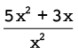
ekwivalent is aan 5 + ? Waarom?
x = 0, because x2 = 0 and division by 0 is undefined and therefore not allowed.
6. Vereenvoudig die volgende uitdrukkings:
(a) 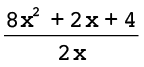 (b) 
7. Evalueer:
(a)  vir x = 2 (b)
vir x = 2 (b)  vir n = 4
vir n = 4
8. Vereenvoudig.
(a) (b) 
9. Toe Natasha en Lebogang gevra is om die uitdrukking  vir x = 10 te evalueer,
vir x = 10 te evalueer,
het hulle dit op verskillende maniere gedoen.
Natasha se berekening: Lebogang se berekening:
10 + 2 + 
= 12  =
=
= 12
Verduidelik hoe elkeen van hulle gedink het om die gegewe uitdrukking te evalueer.
Natasha first simplified the expression to x + 2 + and then
evaluated the simplified expression. Lebogang simply substituted x = 10
in the original expression.
8.4 Kwadrate, derdemagte en wortels van uitdrukkings
VEREENVOUDIG KWADRATE EN DERDEMAGTE
Bestudeer die volgende voorbeeld:
(3x)2 = 3x × 3x
= 3 × x × 3 × x
= 3 × 3 × x × x
Vermenigvuldiging is kommutatief: a × b = b × a
= 9x2
Ons sê (3x)2 vereenvoudig tot 9x2
1. Vereenvoudig die uitdrukkings.
(a) (2x)2 (b) (2x2)2 (c) (−3y)2
2. Vereenvoudig die uitdrukkings.
(a) 25x − 16x (b) 4y + y + 3y (c) a + 17a − 3a
3. Vereenvoudig.
(a) (25x − 16x)2 (b) (4y + y + 3y)2 (c) (a + 17a − 3a)2
Bestudeer die volgende voorbeeld:
(3x)3 = 3x × 3x × 3x
Betekenis van derdemagsverheffing
= 3 × x × 3 × x × 3 × x
= 3 × 3 × 3 × x × x × x
Vermenigvuldiging is kommutatief: a × b = b × a
= 27x3
Ons sê (3x)3 vereenvoudig tot 27x3
4. Vereenvoudig die volgende:
(a) (2x)3 (b) (−x)3
(c) (5a)3 (d) (7y2)3
= 7 × y × y × 7 × y × y × 7 × y × y
= 7 × 7 × 7 × y × y × y × y × y × y
(e) (−3m)3 (f) (2x3)3
= −3 × m × −3 × m × −3 × m
= 2 × x × x × x × 2 × x × x × x × 2 × x × x × x
= −3 × −3 × −3 × m × m ×m
= 2 × 2 × 2 × x × x × x × x × x × x × x × x × x
5. Vereenvoudig.
(a) 5a − 2a (b) 7x + 3x (c) 4b + b
6. Vereenvoudig.
(a) (5a − 2a)3 (b) (7x + 3x)3 (c) (4b + b)3
(d) (13x − 6x)3 (e) (17x + 3x)3 (f) (20y −14y)3
|
|
Onthou altyd om te toets of die vereenvoudigde
uitdrukking ekwivalent is aan die gegewe
uitdrukking vir ten minste drie verskillende waardes
van die gegewe veranderlike.
|
VIERKANTSWORTELS EN DERDEMAGSWORTELS VAN UITDRUKKINGS
1. Thabang en sy vriend Vuyiswa is gevra om  te vereenvoudig.
te vereenvoudig.
Thabang het soos volg geredeneer:
Om die vierkantswortel van ’n getal te bepaal is dieselfde as om vir jouself te vra: “Watter getal word met homself vermenigvuldig?” Die getal wat met homself
vermenigvuldig word, is 2a2 en daarom is  = 2a2.
= 2a2.
Vuyiswa het soos volg geredeneer:
Ek moet eers 2a2 × 2a2 vereenvoudig om 4a4 te kry en dan  = 2a2 bereken.
= 2a2 bereken.
Watter een van die twee metodes verkies jy? Verduidelik waarom.
Learners should realise that Vuyiswa’s method is unnecessarily complicated.
2. Sê of elk van die volgende waar of onwaar is. Gee ’n rede vir jou antwoord.
(a) = 6x (b) = 5x2
3. Vereenvoudig.
(a) y6 × y6 (b) 125x2 + 44x2
4. Vereenvoudig.
(a)  (b)
(b) 
(c)  (d)
(d) 
(e) (f)
5. Wat beteken dit om die derdemagswortel van 8x3 geskryf as te bepaal?
I have to find out what number, when multiplied by itself and by itseagain equals 8x3.
6. Vereenvoudig die volgende:
(a) 2a × 2a × 2a (b) 10b3 × 10b3 × 10b3
= 10 × 10 × 10 × b3 × b3 × b3
(c) 3x3 × 3x3 × 3x3 (d) −3x3 × −3x3 × −3x3
= 3 × 3 × 3 × x3 × x3 × x3
= −3 × −3 × −3 × x3 × x3 × x3
7. Bepaal die volgende:
(a) (b) 
(c) 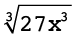 (d) 
8. Vereenvoudig die volgende uitdrukkings:
(a) 6x3 + 2x3 (b) −m3 − 3m3 − 4m3
9. Bepaal die volgende:
(a)  (b)
(b)
(c)  (d)
(d) 
1. Vereenvoudig die volgende:
(a) 2(3b + 1) + 4 (b) 6 − (2 + 5e)
(c) 18mn + 22mn + 70mn (d) 4pqr + 3 + 9pqr
2. Evalueer elk van die volgende uitdrukkings vir m = 10:
(a) 3m2 + m + 10 (b) 5(m2 − 5) + m2 + 25
= 5 × 95 + 125 = 475 + 125 = 600
3. (a) Vereenvoudig:
= × 4b + 6 = + = 2b + 3
(b) Evalueer die uitdrukking  vir b = 100.
vir b = 100.
= 2b + 3 = 200 + 3 = 203
4. Vereenvoudig.
(a) (4g)2 (b) (6y)3 (c) (7s + 3s)2
5. Bepaal die volgende:
(a)  (b) 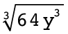 (c)
(b) 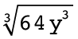 (c)
In hierdie hoofstuk gaan jy vergelykings oplos deur inverse bewerkings toe te pas. Jy gaan ook vergelykings oplos wat eksponente bevat.
9.1 Dink vorentoe en terug 167
9.2 Los vergelykings op deur optellings- en vermenigvuldigingsinverses te gebruik 170
9.3 Los vergelykings op wat magte behels 172

9 Algebraïese vergelykings 2
9.1 Dink vorentoe en terug
DOEN EN HERSTEL WAT GEDOEN IS
1. Voltooi die vloeidiagram deur die uitvoergetalle te bepaal.

2. Voltooi die tabel.
|
x
|
−3
|
−2
|
0
|
5
|
17
|
|
2x
|
−6
|
−4
|
0
|
10
|
34
|
3. Evalueer 4x as:
(a) x = −7 (b) x = 10 (c) x = 0
4. (a) Voltooi die vloeidiagram deur die invoergetalle te bepaal.

(b) Puleng het nog ’n heelgetal in die vloeidiagram ingevoer en −68 as ’n antwoord
gekry. Watter heelgetal het sy ingevoer? Wys jou berekening.
x = −17 −68 ÷ 4 = −17
(c) Verduidelik hoe jy gewerk het om die invoergetalle te bepaal toe jy vraag (a) gedoen het.
I divided the output numbers by 4. I did the opposite of the calculation in the
flow diagram.
5. (a) Voltooi die tabel.
|
x
|
1
|
3
|
5
|
8
|
18
|
|
5x
|
5
|
15
|
25
|
40
|
90
|
(b) Voltooi die vloeidiagramme.
(c) Verduidelik hoe jy die tabel voltooi het.
I divided each output number by 5 to find the input number.
|
|
In algebra wil ons soms uitdrukkings evalueer. Wanneer ons uitdrukkings evalueer, vervang ons ’n veranderlike in die uitdrukking met ’n invoergetal om die waarde van die uitdrukking te kry wat die ooreenstemmende uitvoergetal genoem word. Ons sal aan hierdie proses dink as ’n doenproses.
In ander gevalle wil ons weer dit wat gedoen is ongedaan maak of herstel. Wanneer ons weet watter uitvoergetal verkry is, maar nie weet watter invoergetal gebruik is nie, moet ons dit wat in die evaluering van die uitdrukking gedoen is ongedaan maak. Dan sê ons dat ons ’n vergelyking oplos.
|
6. Kyk weer na vrae 1 tot 5. Sê vir elke vraag of die vraag ’n doenproses of ’n herstelproses vereis het. Gee ’n verduideliking vir jou antwoord (byvoorbeeld: invoer na uitvoer).
Question 1: Doing process, input to output
Question 2: Doing process, input to output
Question 3: Doing process, input to output
Question 4: Undoing process, output to input
Question 5(a): Undoing process, output to input
Question 5b): Doing process, input to output
7. (a) Voltooi die vloeidiagramme.
(b) Wat sien jy raak?
The second diagram undoes the first; it takes you from the input to the output.
8. (a) Voltooi die vloeidiagramme.
(b) Wat sien jy raak?
The second diagram undoes the first; it takes you from the input to the output.
9. (a) Voltooi die vloeidiagramme.
(b) Wat sien jy raak?
The second diagram undoes the first; it takes you from the output to the input.
10. (a) Voltooi die vloeidiagram.

(b) Watter berekeninge sal jy doen om te bepaal wat die invoergetal was as die
uitvoergetal 20 is?
I will first subtract 12 from 20 and then multiply the answer by 8.
Los die volgende probleme op deur te herstel wat gedoen is om die antwoord te kry:
11. ’n Sekere getal word met 10 vermenigvuldig en die antwoord is 150. Wat is die getal?
The number is 15 (because 150 ÷ 10 = 15).
12. Wanneer ’n sekere getal deur 5 gedeel word, is die antwoord 1. Wat is die getal?
The number is 5 (because 5 × 1 = 5).
13. Wanneer 23 by ’n sekere getal getel word, is die antwoord 107. Wat is die getal?
The number is 84 (because 107 – 23 = 84).
14. Wanneer ’n sekere getal met 5 vermenigvuldig word en 2 word van die antwoord afgetrek, is die finale antwoord 13. Wat is die oorspronklike getal?
The number is 3 (because = 3).
|
|
Om van die uitvoerwaarde na die invoerwaarde te beweeg word oplossing van die vergelyking vir die onbekende genoem.
|
9.2 Los vergelykings op deur optellings- en
vermenigvuldigingsinverses te gebruik
BEPAAL DIE ONBEKENDE
Kyk na die vergelyking 3x + 2 = 23.
Ons kan die vergelyking 3x + 2 = 23 in ’n vloeidiagram voorstel, waar x ’n onbekende getal voorstel:

Wanneer jy die proses in die vloeidiagram omkeer, begin jy met die uitvoergetal 23, trek dan 2 af en deel dan die antwoord deur 3:

Ons kan die hele omgekeerde proses hier bo as volg neerskryf:
Trek 2 van albei kante van die vergelyking af:
3x + 2 − 2 = 23 − 2
3x = 21
Deel albei kante deur 3:
= 
x = 7
Ons sê x = 7 is die oplossing van 3x + 2 = 23 want 3 × 7 + 2 = 23. Ons sê dat x = 7 die vergelyking 3x + 2 = 23 waar maak.
Die optellingsinverses en vermenigvuldigingsinverses help ons om die onbekende waarde of die invoerwaarde “op sy eie” te kry.
|
|
Die getalle +2 en −2 is optellingsinverses (of additiewe inverses) van mekaar. Wanneer ons ’n getal en sy optellingsinverse bymekaartel, kry ons
altyd 0.
Die getalle 3 en  is vermenigvuldigingsinverses is vermenigvuldigingsinverses
(of multiplikatiewe inverses) van mekaar. Wanneer ons ’n getal en sy vermenigvuldigingsinverse vermenigvuldig, kry ons altyd 1, so 3 ×  = 1. = 1.
|
Onthou ook:
- • Die vermenigvuldigings-
eienskap van 1: die produk van enige getal en 1 is daardie getal.
- • Die optellingseienskap van 0: die som van enige getal en 0 is daardie getal.
Los die vergelykings hier onder op deur die optellingsinverses en vermenigvuldigings-inverses te gebruik. Kontroleer jou antwoorde.
1. x + 10 = 0 2. 49x + 2 = 100
= 
Checking: 49 × 2 + 2 = 98 + 2 = 100
3. 2x = 1 4. 20 = 11 − 9x
 =
= 
20 – 20 + 9x = 11 – 20 –9x + 9x
x = 
Checking: –9 × – 1 + 11 = 9 + 11 = 20
|
|
Soms moet jy gelyksoortige terme kombineer voor jy die vergelykings kan oplos deur optellingsinverses en vermenigvuldigingsinverses te gebruik, soos in die voorbeeld hier onder.
|
Voorbeeld: Los op vir x: 7x + 3x = 10
7x en 3x is gelyksoortige terme en kan met een
ekwivalente uitdrukking
(7 + 3)x = 10x vervang word.
10x = 10
= 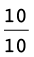
x = 1
5. 4x + 6x = 20 6. 5x = 40 + 3x
= 
 =
= 
7. 3x + 1 − x = 0 8. x + 20 + 4x = −55
x = 
Checking: 2 ×  = –1
= –1
Checking: 5 × −15 + 20 = −75 + 20 = − 55

9.3 Los vergelykings op wat magte behels
|
|
Om ’n eksponensiële vergelyking op te los is dieselfde as om die vraag te vra: Tot watter eksponent moet die grondtal verhef word om die vergelyking waar te maak?
|
1. Voltooi die tabel.
2. Voltooi die tabel.
Karina het die vergelyking 3x = 27 soos volg opgelos:
Die getal 27 kan as 33
uitgedruk word, want 33 = 27.
3x = 27
Dus 3x = 33
Dus x = 3
3. Gebruik nou Karina se metode en los op vir x in elk van die volgende:
(a) 2x = 32 (b) 4x = 16 (c) 6x = 216 (d) 5x + 1 = 125
Jy gaan in hierdie hoofstuk leer hoe om verskillende lyne, hoeke en figure te konstrueer of teken. Jy gaan tekeninstrumente soos ’n liniaal gebruik om reguit lyne te trek, ’n gradeboog om hoeke te meet en teken, en ’n passer om sirkelboë te teken wat ’n bepaalde afstand van ’n punt af is. Jy gaan deur die verskillende konstruksies ’n paar van die eienskappe van driehoeke en vierhoeke ondersoek; met ander woorde, jy gaan meer uitvind oor wat altyd waar is vir alle of sekere soorte driehoeke en vierhoeke.
10.1 Halvering van lyne 175
10.2 Konstruksie van loodlyne 177
10.3 Halvering van hoeke 179
10.4 Konstruksie van spesiale hoeke sonder ’n gradeboog 181
10.5 Konstruksie van driehoeke 182
10.6 Eienskappe van driehoeke 185
10.7 Eienskappe van vierhoeke 187
10.8 Konstruksie van vierhoeke 189
Kan twee sirkels so geteken word dat die rooi lyne nie teen regte hoeke sny nie?
10 Konstruksie van meetkundige figure
10.1 Halvering van lyne
Wanneer ons meetkundige figure konstrueer, of teken, moet ons dikwels lyne of hoeke halveer. Halvering beteken om iets in twee gelyke dele te verdeel. Daar is verskillende maniere om ’n lynstuk te halveer.
HALVEER ’N LYNStuk MET ’N LINIAAL
1. Lees deur die volgende stappe.
|
Stap 1: Trek lynstuk AB en bepaal sy middelpunt.
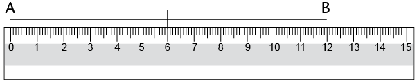
Stap 2: Trek enige lynstuk deur die middelpunt.
Die klein merkies op AF en FB wys dat AF en FB ewe lank is.

|
|
|
CD word ’n halveerlyn genoem, want dit halveer AB. AF = FB.
|
2. Gebruik ’n liniaal om die volgende lynstukke te trek en halveer: AB = 6 cm en
XY = 7 cm.
Jy het in Graad 6 geleer hoe om ’n passer te gebruik om sirkels en sirkelboë (gedeeltes van sirkels) te teken. Ons kan sirkelboë (of boë) gebruik om ’n lynstuk te halveer.
HALVEER ’N LYNStuk MET ’N PASSER EN LINIAAL
1. Lees deur die volgende stappe.
|
Stap 1
Sit die passer op een eindpunt van die lynstuk
(punt A). Trek ’n boog bo en onder die lyn. (Let op
dat al die punte op die boog bo en onder die lyn dieselfde afstand vanaf punt A af is.)
Stap 2
Sit die passer op punt B sonder om sy stelling te verander. Trek ’n boog bo en onder die lyn sodat die boë die eerste twee sny. (Die twee punte waar die boë sny, is dieselfde afstand van punt A en van punt B af.)
Stap 3
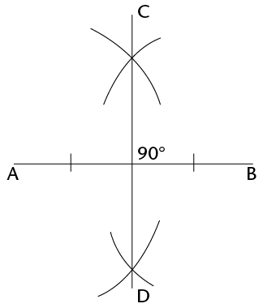
Gebruik ’n liniaal om
die punte te verbind
waar die boë sny.
Hierdie lynstuk
(CD) is die
halveerlyn van AB.
’n Loodlyn is ’n lyn wat ’n ander lyn teen ’n hoek van 90° sny.
|
|
|
Let ook op dat CD loodreg op AB is. Dit word daarom ook ’n loodregte halveerlyn genoem.
|
2. Werk in jou oefeningboek. Gebruik ’n passer en ’n
liniaal om te oefen om loodregte halveerlyne op
lynstukke te trek.
Probeer dit!
Werk in jou oefeningboek. Gebruik net ’n gradeboog en liniaal om ’n loodregte halveerlyn op ’n lynstuk te trek. (Onthou dat ons ’n gradeboog gebruik om hoeke te meet.)
10.2 Konstruksie van loodlyne
’N LOODLYN VANAF ’N GEGEWE PUNT
1. Lees deur die volgende stappe.
|
Stap 1
Sit jou passer se ankerpunt op die gegewe punt (punt P). Trek ’n boog oor die lyn aan elke kant van die gegewe punt. Moenie die passer se stelling verander as jy die tweede boog trek nie.

|
Stap 2
Vanaf elke boog op die lyn, trek nog ’n boog op die teenoorgestelde kant van die lyn van waar die gegewe punt (P) is. Die twee nuwe boë sal sny.

|
|
Stap 3
Gebruik jou liniaal om die gegewe punt (P) met die punt te verbind waar die boë sny (Q).

|
PQ is loodreg op AB.
Ons skryf dit ook soos volg: PQ ⊥ AB.
|
2. Gebruik jou passer en liniaal om ’n loodlyn vanaf elke
gegewe punt na die lynstuk te trek:
’N LOODLYN BY ’N GEGEWE PUNT OP ’N LYN
1. Lees deur die volgende stappe.
|
Stap 1
Sit jou passer se ankerpunt op die gegewe punt (P). Trek ’n boog oor die lyn aan weerskante van die gegewe punt. Moenie die passer se stelling verander as jy die tweede boog trek nie.

|
Stap 2
Maak jou passer oop sodat dit wyer is as die afstand vanaf een van die boë na punt P. Sit die passer se ankerpunt op elke boog en trek ’n boog bo of onder punt P. Die twee nuwe boë sal sny.

|
|
Stap 3
Gebruik jou liniaal om die
gegewe punt (P) en die punt
waar die boë sny (Q) te verbind.
PQ ⊥ AB
|
|
2. Gebruik jou passer en liniaal om ’n loodlyn by die gegewe punt op elke lyn te trek:

10.3 Halvering van hoeke
Hoeke word gevorm waar enige twee lyne ontmoet of sny. Ons gebruik grade (°) om hoeke te meet.
MEET EN KLASSIFISEER HOEKE
In die figure hier onder het elke hoek ’n nommer van 1 tot 9.
1. Gebruik ’n gradeboog om die groottes van al die hoeke in elke figuur te meet. Skryf jou antwoorde op elke figuur neer.
(a) (b)

2. Gebruik jou antwoorde om die hoekgroottes hier onder in te vul.
 =
=
°
 =
=
°
 +
+  =
=
°
 +
+  =
=
°
+  =
=
°
 +
+  +
+  =
=
°
 +
+  =
=
°
 +
+  +
+  =
=
°
 +
+  =
=
°
 +
+  =
=
°
 +
+  +
+  =
=
°
 +
+  +
+  +
+  =
=
°
 +
+  +
+  +
+  =
=
°
 +
+  +
+  +
+  +
+  =
=
°
3. Skryf langs elke antwoord hier bo neer watter soort hoek dit is, dit wil sê skerp, stomp, regte, gestrekte of inspringende hoek of ’n omwenteling.
HALVEER HOEKE SONDER ’N GRADEBOOG
1. Lees deur die volgende stappe.
|
Stap 1
Sit die passer se ankerpunt op punt B, die hoekpunt van die hoek. Trek ’n boog oor elke been van die hoek.
|
Stap 2
Sit die passer op die punt waar een boog ’n been sny en trek ’n boog binne die hoek. Sonder om die passer se
stelling te verander, herhaal vir die ander been sodat die twee boë sny.

|
|
Stap 3
Gebruik ’n liniaal om die
hoekpunt met die punt te
verbind waar die boë sny (D).
DB is die halveerlyn van A C. C.
|
|
2. Gebruik jou passer en liniaal om die hoeke te halveer.
Jy kan elk van die hoeke met ’n gradeboog meet om te kyk of jy die gegewe hoek korrek gehalveer het.

10.4 Konstruksie van spesiale hoeke sonder ’n gradeboog
KONSTRUEER HOEKE VAN 60°, 30° EN 120°
1. Lees deur die volgende stappe.
|
Stap 1
Trek ’n lynstuk (JK). Met die passer se ankerpunt op punt J, trek ’n boog oor JK om verby punt J te gaan.
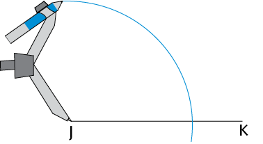
|
Stap 2
Sonder om die passer se stelling te
verander, verskuif die passer na die punt waar die boog JK sny en trek ’n boog wat die eerste een sny.

|
|
Stap 3
Verbind punt J met die punt waar die
twee boë sny (P).
P K = 60° K = 60°

|
2. (a) Konstrueer ’n hoek van 60° by punt B op die
volgende bladsy.
Wanneer jy later meer oor die
eienskappe van driehoeke leer, sal jy verstaan waarom die metode hier bo ’n hoek van 60° skep. Of kan jy dit nou al uitwerk? (Wenk: Wat weet jy van gelyksydige driehoeke?)
(b) Halveer die hoek wat jy gekonstrueer het.
(c) Kan jy sien dat die gehalveerde hoek uit twee
hoeke van 30° bestaan?
(d) Verleng lynstuk BC na A.
Meet dan die hoek wat aangrensend tot die
hoek van 60° is.
Aangrensend beteken “langs”.
Wat is sy grootte?
(e) Die hoek van 60° en sy aangrensende hoek werk saam uit op
KONSTRUEER HOEKE VAN 90° EN 45°
1. Konstrueer ’n hoek van 90° by punt A. Kyk weer na afdeling 10.2 as jy sukkel.
2. Halveer die 90°-hoek om ’n hoek van 45° te skep. Blaai terug na afdeling 10.3 as jy hulp nodig het.
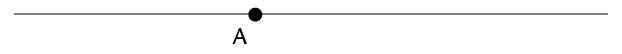
Uitdaging
Werk in jou oefeningboek. Probeer om die volgende hoeke te konstrueer sonder om ’n gradeboog te gebruik: 150°, 210° en 135°.

10.5 Konstruksie van driehoeke
In hierdie afdeling gaan jy leer hoe om driehoeke te konstrueer. Jy sal ’n potlood, ’n gradeboog, ’n liniaal en ’n passer nodig hê.
’n Driehoek het drie sye en drie hoeke. Ons kan ’n driehoek konstrueer as ons sommige van sy afmetings ken, dit wil sê sy sye, sy hoeke, of party van sy sye en hoeke.
KONSTRUEER DRIEHOEKE
Konstrueer driehoeke as drie sye gegee word
1. Lees deur die volgende stappe. Dit beskryf hoe om ∆ABC met sylengtes van 3 cm,
5 cm en 7 cm te konstrueer.
|
Stap 1
Trek een sy van die driehoek met ’n
liniaal. Die konstruksie is dikwels
makliker as jy met die langste sy begin.

|
Stap 2
Met radius 5 cm en ankerpunt op
A, trek ’n boog. Die derde hoekpunt van die driehoek sal iewers op hierdie boog wees.

|
|
Stap 3
Met radius 3 cm en ankerpunt B, trek ’n boog om die eerste boog te sny. Hierdie snypunt sal die derde hoekpunt van die driehoek wees.

|
Stap 4
Gebruik jou liniaal om punt A en punt B te verbind aan die punt waar die boë sny (punt C).

|
2. Werk in jou oefeningboek. Volg die stappe hier bo om die volgende driehoeke te konstrueer:
(a) ∆ABC met sye 6 cm, 7 cm en 4 cm
(b) ∆KLM met sye 10 cm, 5 cm en 8 cm
(c) ∆PQR met sye 5 cm, 9 cm en 11 cm
Konstrueer driehoeke as sekere hoeke en sye gegee word
3. Gebruik die ruwe sketse in (a) tot (c) hier onder om akkurate driehoeke te konstrueer deur ’n liniaal, passer en gradeboog te gebruik. Doen die konstruksie langs elke skets.
- • Die stippellyne wys waar jy ’n passer moet gebruik om die lengte van ’n sy te
meet.
- • Gebruik ’n gradeboog om die grootte van die gegewe hoeke te meet.
(a) Konstrueer ∆ABC, met twee hoeke en
een sy gegee.

(b) Konstrueer ∆KLM, met twee sye en
’n hoek gegee.

(c) Konstrueer reghoekige ∆PQR, met die
skuinssy en een ander sy gegee.

4. Meet die ontbrekende hoeke en sye van elke
driehoek in 3(a) tot (c) op die vorige bladsy.
Skryf die afmetings by jou voltooide
konstruksies.
5. Vergelyk elkeen van jou gekonstrueerde
driehoeke in 3(a) tot (c) met ’n klasmaat se
driehoeke. Is die driehoeke presies dieselfde?
|
|
As driehoeke presies dieselfde is, sê ons hulle is kongruent.
|

10.6 Eienskappe van driehoeke
Die hoeke van ’n driehoek kan dieselfde grootte of verskillende groottes wees. Die sye van ’n driehoek kan dieselfde lengte of verskillende lengtes wees.
EIENSKAPPE VAN GELYKSYDIGE DRIEHOEKE
1. (a) Konstrueer ∆ABC langs sy ruwe skets hier onder.
(b) Meet en merk die groottes van al sy
sye en hoeke.

2. Meet en skryf die groottes van die sye en hoeke
van ∆DEF hier regs neer.
3. Albei driehoeke in vrae 1 en 2 word gelyksydige
driehoeke genoem. Bespreek met ’n klasmaat of
die volgende waar is vir ’n gelyksydige driehoek:
- • Al die sye is ewe lank.
- • Al die hoeke is gelyk aan 60°.
EIENSKAPPE VAN GELYKBENIGE DRIEHOEKE
1. (a) Konstrueer ∆DEF met EF = 7 cm,  = 50° en
= 50° en  = 50°.
= 50°.
Konstrueer ook ∆JKL met JK = 6 cm, KL = 6 cm en  = 70°.
= 70°.
(b) Meet en merk al die sye en hoeke van elke driehoek.
2. Albei driehoeke hier bo word gelykbenige driehoeke genoem. Bespreek met ’n klasmaat of die volgende waar is vir ’n gelykbenige driehoek:
- • Net twee sye is ewe lank.
- • Net twee hoeke is ewe groot.
- • Die twee gelyke hoeke is teenoor die twee gelyke sye.
DIE SOM VAN DIE HOEKE IN ’N DRIEHOEK
1. Kyk na jou gekonstrueerde driehoeke ∆ABC, ∆DEF en ∆JKL hier bo en op die vorige bladsy. Wat is die som van die drie hoeke elke keer?
2. Het jy gevind dat die som van die binnehoeke van elke driehoek 180° is? Doen die volgende om te kontroleer of dit waar is vir ander driehoeke.
(a) Konstrueer enige driehoek op ’n skoon
vel papier. Merk die hoeke A, B en C en
knip die driehoek uit.
(b) Skeur die hoeke van die driehoek netjies
af en pas hulle langs mekaar.
(c) Let op dat , en  ’n gestrekte
’n gestrekte
hoek vorm. Voltooi:  +
+  + =
+ =
°
|
|
Ons kan aflei dat die som van die binnehoeke van ’n driehoek altyd gelyk is aan 180°.
|
10.7 Eienskappe van vierhoeke
’n Vierhoek is enige geslote figuur met vier reguit sye. Ons klassifiseer vierhoeke volgens hulle sye en hoeke. Ons let op watter sye ewewydig, loodreg of gelyk is. Ons let ook op watter hoeke ewe groot is.
EIENSKAPPE VAN VIERHOEKE
1. Meet en skryf die groottes van al die hoeke en die lengtes van al die sye van elke
vierhoek hier onder neer.
|
Vierkant
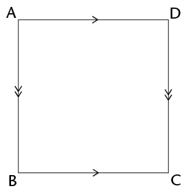
|
Reghoek
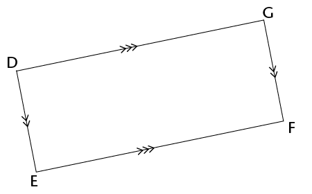
|
|
Parallelogram

|
Ruit

|
|
Trapesium
|
Vlieër

|
2. Gebruik jou antwoorde in vraag 1. Maak ’n ✓ in die toepaslike blokkie hier onder om te wys watter eienskap korrek vir elke figuur is.
|
|
|
|
|
|
|
|
|
Net een paar sye is ewewydig
|
|
|
|
|
|
✓
|
|
Teenoorstaande sye is ewewydig
|
✓
|
✓
|
✓
|
✓
|
|
|
|
Teenoorstaande sye is ewe lank
|
✓
|
✓
|
✓
|
✓
|
|
|
|
Alle sye is ewe lank
|
|
|
✓
|
✓
|
|
|
|
Twee pare aangrens-ende sye is ewe lank
|
|
|
✓
|
✓
|
✓
|
|
|
Teenoorstaande hoeke is ewe groot
|
✓
|
✓
|
✓
|
✓
|
|
|
|
Alle hoeke is gelyk
|
|
✓
|
|
✓
|
|
|
SOM VAN DIE HOEKE IN ’N VIERHOEK
1. Tel die vier hoeke van elke vierhoek op die vorige bladsy bymekaar. Wat merk jy op oor die som van die hoeke van elke vierhoek?
2. Het jy gevind dat die som van die binnehoeke van elke vierhoek gelyk is aan 360°?
Doen die volgende om te kontroleer of dit waar is vir ander vierhoeke.
(a) Gebruik ’n liniaal om enige vierhoek op ’n skoon vel papier te konstrueer.
(b) Merk die hoeke A, B, C en D. Knip die vierhoek uit.
(c) Skeur die hoeke van die vierhoek netjies af en pas hulle langs mekaar.
(d) Wat sien jy raak?
|
|
Ons kan aflei dat die som van die binnehoeke van ’n vierhoek altyd 360° is.
|
10.8 Konstruksie van vierhoeke
Jy het in afdeling 10.2 geleer hoe om loodlyne te konstrueer. As jy weet hoe om ewewydige lyne te konstrueer, behoort jy enige vierhoek akkuraat te kan konstrueer.
KONSTRUEER EWEWYDIGE LYNE OM VIERHOEKE TE TEKEN
1. Lees deur die volgende stappe.
|
Stap 1
Merk ’n punt D vanaf lynstuk AB. Hierdie punt D sal op die lyn wees wat ewewydig aan AB sal wees. Trek ’n lyn vanaf A deur D.

|
Stap 2
Met ankerpunt op A, trek ’n boog
wat AD en AB sny. Hou dieselfde
passerstelling en trek ’n boog vanaf punt D soos gewys word.

|
|
Stap 3
Stel die passer se wydte op die afstand tussen die punte waar die eerste boog
AD en AB sny. Met ankerpunt op die punt waar die tweede boog AD sny, trek ’n derde boog om die tweede boog te sny.
|
Stap 4
Trek ’n lyn van D af deur die punt waar die twee boë sny. DC is ewewydig aan AB.
|
2. Oefen in jou oefeningboek om ’n parallelogram, vierkant en ruit te konstrueer.
3. Gebruik ’n gradeboog om te probeer om vierhoeke met ten minste een stel ewewydige
sye te teken.
1. Doen die volgende konstruksie in jou oefeningboek.
(a) Gebruik ’n passer en liniaal om ’n gelyksydige ∆ABC met sye 9 cm te konstrueer.
(b) Halveer  sonder om ’n gradeboog te gebruik. Die halveerlyn sny AC by punt D.
sonder om ’n gradeboog te gebruik. Die halveerlyn sny AC by punt D.
(c) Gebruik ’n gradeboog om A B te meet. Skryf die afmeting op die tekening.
B te meet. Skryf die afmeting op die tekening.
2. Benoem die volgende soorte driehoeke en vierhoeke.
A B C
D E F
3. Watter van die volgende vierhoeke pas by elke beskrywing hier onder? (Daar sal
dikwels meer as een antwoord wees.)
parallelogram; reghoek; ruit; vierkant; vlieër; trapesium
(a) Alle sye is ewe lank en alle hoeke is ewe groot.
(b) Twee pare aangrensende sye is ewe lank.
(c) Een paar sye is ewewydig.
(d) Teenoorstaande sye is ewewydig.
(e) Teenoorstaande sye is ewewydig en alle hoeke is ewe groot.
(f) Alle sye is ewe lank.
Uitdaging
1. Konstrueer hierdie driehoeke:
(a) ∆STU, met drie hoeke gegee: = 45°, = 70° en  = 65°.
= 65°.
(b) ∆XYZ, met twee sye en die hoek teenoor een van die sye gegee:  = 50°,
= 50°,
XY = 8 cm en XZ = 7 cm.
2. Kan jy meer as een skets vir elke
driehoek hier bo kry? Verduidelik
jou bevindings aan ’n klasmaat.
In hierdie hoofstuk gaan jy meer leer oor verskillende soorte driehoeke en vierhoeke en hulle eienskappe. Jy gaan figure wat kongruent is en figure wat gelykvormig is ondersoek. Jy gaan ook jou kennis van die eienskappe van 2D-figure gebruik om meetkundige probleme op te los.
11.1 Soorte driehoeke 193
11.2 Onbekende hoeke en sye van driehoeke 195
11.3 Soorte vierhoeke en hulle eienskappe 200
11.4 Onbekende hoeke en sye van vierhoeke 204
11.5 Kongruensie 205
11.6 Gelykvormigheid 207


11 Meetkunde van 2D-figure
11.1 Soorte driehoeke
Jy weet teen hierdie tyd dat ’n driehoek ’n geslote 2D-figuur met drie reguit sye is. Ons kan verskillende soorte driehoeke volgens die lengtes van hulle sye en volgens die groottes van hulle hoeke klassifiseer of benoem.
BENOEM DRIEHOEKE VOLGENS HULLE SYE
1. Pas die naam van elke soort driehoek by die korrekte beskrywing.
|
|
|
|
Gelykbenige driehoek
|
Al die sye is ewe lank.
|
|
Ongelykbenige driehoek
|
Geen sye is ewe lank nie.
|
|
Gelyksydige driehoek
|
Twee sye is ewe lank.
|
2. Benoem elke soort driehoek deur na sy sye te kyk.

BENOEM DRIEHOEKE VOLGENS HULLE HOEKE
Onthou die volgende soorte hoeke:

Skerphoek Regte hoek Stomphoek
(< 90°) (= 90°) (tussen 90° en 180°)
Bestudeer die volgende driehoeke en beantwoord dan die vrae:

Skerphoekige driehoek Reghoekige driehoek Stomphoekige driehoek
1. Is al die hoeke van ’n driehoek altyd ewe groot?
2. As ’n driehoek ’n stomphoek het, word dit ’n
driehoek genoem.
3. As ’n driehoek net skerphoeke het, word dit ’n
driehoek genoem.
4. As ’n driehoek ’n hoek het wat gelyk is aan
, word dit ’n reghoekige driehoek
genoem.
ONDERSOEK DIE HOEKE EN SYE VAN DRIEHOEKE
1. (a) Wat is die som van die
binnehoeke van ’n driehoek?
(b) Kan ’n driehoek twee regte hoeke hê?
As jy nie die antwoorde in 1(b) en (c) kan uitwerk nie, probeer om die driehoeke te konstrueer om die antwoorde te kry.
Verduidelik jou antwoord.
(c) Kan ’n driehoek meer as een stomphoek hê? Verduidelik jou antwoord.
2. Kyk na die driehoeke hier onder. Die bogies wys watter hoeke is gelyk.
Gelyksydige driehoek Gelykbenige driehoek Reghoekige driehoek
(a) ∆ABC is ’n gelyksydige driehoek. Wat sien jy raak as jy na sy hoeke kyk?
(b) ∆FEM is ’n gelykbenige driehoek. Wat sien jy raak as jy na sy hoeke kyk?
(c) ∆JKL is ’n reghoekige driehoek. Is sy langste sy teenoor die 90°-hoek?
(d) Konstrueer enige drie reghoekige driehoeke op ’n vel papier. Is die langste sy
altyd teenoor die 90° hoek?
|
|
Eienskappe van driehoeke:
- • Die som van die binnehoeke van ’n driehoek
is 180°.
- • ’n Gelyksydige driehoek se sye is almal ewe lank
en elke binnehoek is gelyk aan 60°.
- • ’n Gelykbenige driehoek het twee sye wat ewe lank
is en die hoeke teenoor die gelyke sye is ewe groot.
- • ’n Ongelykbenige driehoek het nie sye wat ewe
lank is nie.
- • ’n Reghoekige driehoek het ’n regte hoek (90°).
- • ’n Stomphoekige driehoek het een stomphoek (tussen 90° en 180°).
- • ’n Skerphoekige driehoek het drie skerphoeke (< 90°).
|
Binnehoeke is die hoeke binne-in ’n geslote figuur, nie die hoeke aan die buitekant nie.

11.2 Onbekende hoeke en sye van driehoeke
Jy kan dit wat jy reeds oor driehoeke weet gebruik om ander inligting te verkry. As jy nuwe inligting uitwerk, moet jy altyd redes gee vir die bewerings wat jy maak. Kyk na die voorbeelde hier onder. Onbekende hoeke en sye is uitgewerk nadat sekere inligting gegee is. Die rede vir elke bewering word tussen vierkantige hakies geskryf.

 =
=  =
=  = 60° [Hoeke in ’n gelyksydige ∆ = 60°]
= 60° [Hoeke in ’n gelyksydige ∆ = 60°]
DE = DF [Gegee]
 =
=  [Hoeke teenoor die gelyke sye van ’n gelykbenige ∆ is ewe groot]
[Hoeke teenoor die gelyke sye van ’n gelykbenige ∆ is ewe groot]
 = 55° [Die som van die binnehoeke van ’n ∆ = 180°; so = 180° − 40° − 85°]
= 55° [Die som van die binnehoeke van ’n ∆ = 180°; so = 180° − 40° − 85°]
Jy kan die volgende redes verkort op die maniere wat gewys word:
- • Som van binnehoeke (∠e) van ’n driehoek (∆) = 180°: binne∠e van ∆
- • Gelykbenige driehoek het 2 sye en 2 hoeke wat gelyk is: gelykbenige ∆
- • Gelyksydige driehoek het 3 sye en 3 hoeke wat gelyk is: gelyksydige ∆
- • Hoeke wat ’n reguit lyn vorm = 180°: reguit lyn
WERK ONBEKENDE HOEKE EN SYE UIT
Bepaal die groottes van onbekende hoeke en sye in die volgende driehoeke. Gee altyd redes vir elke bewering.
|
1. Bepaal  . .

|
 + +  + +  = =
[binne∠e van ’n ∆]
50° +
+  = =
145° +  = =
 = =
– 145°
 = =
|
|
2. Bepaal  . .

|
+ +  = 180° [Interior ∠s of a ∆] = 180° [Interior ∠s of a ∆]
45° +  + 60° = 180° + 60° = 180°
 = 180° − 45° − 60° = 180° − 45° − 60°
 = 75° = 75°
|
|
3. (a) Bepaal KM.
(b) Bepaal  . .

|
(b) =  = 38° [Isosceles ∆] = 38° [Isosceles ∆]
+ + = 180° [Interior ∠s of a ∆]
 + 38° + 38° = 180° + 38° + 38° = 180°
 = 180° − 38° − 38° = 180° − 38° − 38°
 = 104° = 104°
|
|
4. Wat is die grootte van  ? ?

|
+ +  = 180° [Interior ∠s of a ∆] = 180° [Interior ∠s of a ∆]
 + 90° + 32° = 180° + 90° + 32° = 180°
 = 180° − 90°− 32° = 180° − 90°− 32°
 = 58° = 58°
|
|
5. (a) Bepaal CB.
(b) Bepaal  as as  = 50°. = 50°.

|
(a) CB = CA = 8 cm [Isosceles ∆]
(b) =  = 50° = 50°
+ +  = 180° [Interior ∠s of a ∆] = 180° [Interior ∠s of a ∆]
 + 50° + 50° = 180° + 50° + 50° = 180°
 = 180° − 50° − 50° = 180° − 50° − 50°
 = 80° = 80°
|
|
6. (a) Bepaal DF.
(b) Bepaal  as as  = 100°. = 100°.

|
(a) DF = DE = 4 mm [Isosceles ∆]
(b) + +  = 180° [Interior ∠s of a ∆] = 180° [Interior ∠s of a ∆]
100° + +  = 180° = 180°
2 = 180° − 100° = 180° − 100°
 = 80° ÷ 2 = 80° ÷ 2
 = 40° = 40°
|
WERK NOG ONBEKENDE HOEKE EN SYE UIT
|
1. Bereken die groottes van  en en  . .

|
=  [Isosceles ∆] [Isosceles ∆]
24° + + = 180° [Interior ∠s of a ∆]
+  = 180° − 24° = 180° − 24°
2 = 156° = 156°
 = 78° = 78°
 = 78° = 78°
|
|
2. Bereken die grootte van x.

|
=  = x [Isosceles ∆] = x [Isosceles ∆]
80° + x + x = 180° [Interior ∠s of a ∆]
|
|
3. KLM is ’n reguit lyn. Bereken die groottes van x en y.
|
|

|
100° + 50° + x = 180° [Interior ∠s of a ∆]
30° + y = 180° [Straight line]
|
|
4. Hoek b en ’n hoek van 130° vorm ’n gestrekte hoek. Bereken die groottes van a en b.
|
|

|
130° + b = 180° [straight line]
130° + 30° + a = 180° [Interior ∠s of a ∆]
|
|
5. Hoeke m en n vorm ’n gestrekte hoek. Bereken die groottes van m en n.
|
|

|
m + n = 180° [straight line]
|
|
6. BCD is ’n reguit lyn. Bereken die grootte van x.
|
|

|
=  = x [equilateral ∆] = x [equilateral ∆]
A B = 180° − 68° [straight line] B = 180° − 68° [straight line]
A B = 112° B = 112°
|
|
7. Bereken die grootte van x en dan die grootte van  . .
|
|

|
x + (2x + 40°) + (x + 20°) = 180°
 = 2x + 40° = 2x + 40°
 = 2(30°) + 40° = 2(30°) + 40°
 = 100° = 100°
|
|
8. Bereken die grootte van  . .
|
|

|
(x + 10°) + (2x − 30°) + (2x − 50°) = 180°
5x = 180° + 30° + 50° − 10°
 = 2(50°) − 30° = 2(50°) − 30°
 = 70° = 70°
|
|
9. DNP is ’n reguit lyn. Bereken die groottes van x en y.
|
|
|
NP = M N = 56° [Isosceles ∆] N = 56° [Isosceles ∆]
x + 56° + 56° = 180° [Interior ∠s of a ∆]
M D = 180° − 68° [Straight line] D = 180° − 68° [Straight line]
M D = 112° D = 112°
N D = NM = y [Isosceles ∆] D = NM = y [Isosceles ∆]
y + y + 112° = 180° [Interior ∠s of a ∆]
|
11.3 Soorte vierhoeke en hulle eienskappe
’n Vierhoek is ’n figuur met vier reguit sye wat by vier
hoekpunte ontmoet. In baie vierhoeke het al vier die
sye verskillende lengtes en het die hoeke verskillende
groottes.
Jy het vantevore met die volgende soorte vierhoeke gewerk –
sommige van hulle het gelyke sye en gelyke hoeke:
|
|
- • parallelogramme
- • reghoeke
- • vlieërs
- • ruite
- • vierkante
- • trapesiums.
|
DIE EIENSKAPPE VAN VERSKILLENDE SOORTE VIERHOEKE
1. In elke vraag hier onder word verskillende voorbeelde van ’n bepaalde soort
vierhoek gegee. Identifiseer in elke geval die soort vierhoek. Beskryf die eienskappe van elke soort deur stellings oor die lengtes en rigtings van die sye te maak, asook
oor die groottes van die hoeke. Dit mag nodig wees om afmetings te neem om dit te kan doen.
Vraag 1(a)

Vraag 1(b)
These two shapes are parallelograms because they
have opposite sides equal and opposite sides parallel.
The second shape is a special kind of parallelogram,
a rectangle, because all its angles are right angles.

Vraag 1(c)
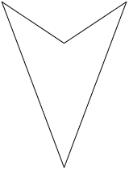
These shapes are all kites, because they have adjacent sides
equal. The first shape is a square, which is a special kind of kite
that has additional properties of having all angles right angles
and all sides equal. The third shape is a concave polygon,
sometimes called an arrowhead.

Vraag 1(d)
These are rectangles, because the opposite sides are equal and parallel and all the
angles are right angles. The second shape is a square, a special kind of rectangle,
which also has all sides equal.

Vraag 1(e)
Vraag 1(f)
2. Gebruik jou antwoorde en die tekeninge in vraag 1 om te bepaal of die volgende stellings waar (W) of onwaar (O) is.
(a) ’n Reghoek is ’n parallelogram.
(b) ’n Vierkant is ’n parallelogram.
(c) ’n Ruit is ’n parallelogram.
(d) ’n Vlieër is ’n parallelogram.
(e) ’n Trapesium is ’n parallelogram.
(f) ’n Vierkant is ’n ruit.
(g) ’n Vierkant is ’n reghoek.
(h) ’n Vierkant is ’n vlieër.
(i) ’n Ruit is ’n vlieër.
(j) ’n Reghoek is ’n ruit.
(k) ’n Reghoek is ’n vierkant.
’n Konvensie is iets (soos ’n definisie of metode) waaroor die meeste mense saamstem, en wat hulle aanvaar en volg.
|
|
As ’n vierhoek al die eienskappe van ’n ander vierhoek het, kan jy dit in terme van die ander vierhoek definieer, soos jy hier bo vasgestel het.
|
3. Hier is ’n paar konvensionele definisies van vierhoeke:
- • ’n Parallelogram is ’n vierhoek met twee teenoorstaande sye ewewydig.
- • ’n Reghoek is ’n parallelogram met al vier hoeke gelyk aan 90°.
- • ’n Ruit is ’n parallelogram met al vier sye ewe lank.
- • ’n Vierkant is ’n reghoek met al vier sye ewe lank.
- • ’n Trapesium is ’n vierhoek met een paar teenoorstaande sye ewewydig.
- • ’n Vlieër is ’n vierhoek met twee pare aangrensende sye ewe lank.
Skryf ander definisies neer wat vir hierdie vierhoeke werk.
(a) Reghoek:
’n Vierhoek met albei pare teenoorstaande sye ewe lank en alle hoeke
gelyk aan 90°.
(b) Vierkant:
’n Ruit met alle hoeke gelyk aan 90°.
(c) Ruit:
’n Vierhoek met albei pare teenoorstaande sye ewe lank en albei pare
teenoorstaande hoeke ewe groot.
(d) Vlieër:
’n Vierhoek met een paar teenoorstaande hoeke ewe groot en twee pare
aangrensende sye ewe lank.
(e) Trapesium:
’n Vierhoek met net een paar sye ewewydig. (Daar is geen ander
definisie wat werk nie.)
11.4 Onbekende hoeke en sye van vierhoeke
BEPAAL ONBEKENDE HOEKE EN SYE
Bepaal die lengte van al die onbekende sye en hoeke in die volgende vierhoeke. Gee redes om jou bewerings te staaf. (Onthou ook dat die som van die hoeke van ’n vierhoek 360° is.)
|
1.

|
|
|
2.

|
|
|
3. ABCD is ’n vlieër.

|
|
|
4. Die omtrek van RSTU is 23 cm.

|
|
|
5. PQRS is ’n reghoek en het ’n omtrek van 40 cm.

|

11.5 Kongruensie
WAT IS KONGRUENSIE?
1. ∆ABC word in die vertikale lyn
(spieël) gereflekteer om ∆KLM te gee.
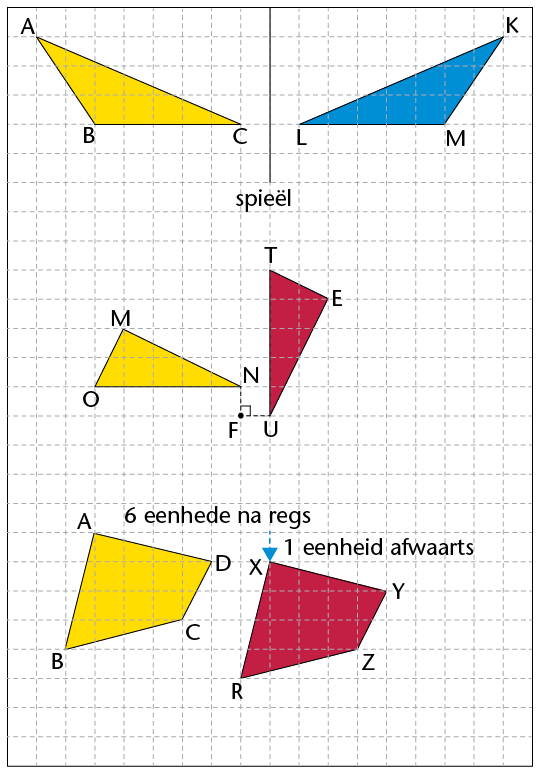
Is die grootte en vorm van die twee
driehoeke presies dieselfde?
2. ∆MON word 90° om punt F geroteer
om vir jou ∆TUE te gee.
Is die grootte en vorm van ∆MON en
∆TUE presies dieselfde?
3. Vierhoek ABCD word 6 eenhede na
regs en 1 eenheid afwaarts verplaas
om vierhoek XRZY te gee.
Is ABCD en XRZY presies dieselfde?
In die vorige aktiwiteit is elk van die figure getransformeer (gereflekteer, geroteer of getransleer) om ’n tweede figuur te gee. Die tweede figuur in elke paar het dieselfde hoeke, sylengtes, grootte en oppervlakte as die eerste figuur. Die tweede figuur is dus ’n beeld van die eerste figuur.
Die woord kongruent kom van die Latynse woord congruere af, wat beteken “om saam te stem”. Figure is kongruent as hulle perfek op mekaar pas wanneer hulle bo-op mekaar gesit word.
|
|
Wanneer een figuur ’n beeld van ’n ander figuur is,
sê ons die twee figure is kongruent.
Die simbool vir kongruent is: ≡
|
Notasie van kongruente figure
Wanneer ons figure benoem wat kongruent is, benoem ons hulle so dat die passende, of ooreenstemmende, hoeke in dieselfde volgorde is. Byvoorbeeld, in ∆ABC en ∆KLM op die vorige bladsy sien ons:
Ons kan nie aanvaar dat veelhoeke kongruent is as die hoeke van die veelhoeke ewe groot is nie. Jy sal in Graad 9
oor die voorwaardes van kongruensie leer.
 is kongruent aan (pas by en is gelyk aan)
is kongruent aan (pas by en is gelyk aan)  .
.
 is kongruent aan
is kongruent aan  .
.
 is kongruent aan .
is kongruent aan .
|
|
Ons gebruik dus hierdie notasie: ∆ABC ≡ ∆KML.
|
Net so vir die ander pare figure op die vorige bladsy:
∆MON ≡ ∆ETU en ABCD ≡ XRZY.
Die notasie van kongruente figure wys ook watter sye van die twee figure ooreenstem en gelyk is. Byvoorbeeld, ∆ABC ≡ ∆KML wys dat:
AB = KM, BC = ML en AC = KL
Die verkeerde notasie ∆ABC ≡ ∆KLM sal die volgende verkeerde inligting gee:
 =
=  ,
,  =
=  , AB = KL, en AC = KM.
, AB = KL, en AC = KM.
IDENTIFISEER KONGRUENTE HOEKE EN SYE
Skryf neer watter hoeke en sye is gelyk tussen elke paar kongruente figure.
|
1. ∆PQR ≡ ∆UCT
|
2. ∆KLM ≡ ∆UWC
|
|
3. ∆GHI ≡ ∆QRT
|
4. ∆KJL ≡ ∆POQ
|
11.6 Gelykvormigheid
Jy het in Graad 7 geleer dat twee figure gelykvormig is wanneer hulle dieselfde vorm het (as hulle hoeke ewe groot is) maar dat hulle verskillende groottes mag wees. Die sye van een figuur is proporsioneel langer of korter as die sye van die ander figuur; dit wil sê, die lengte van elke sy word deur dieselfde getal gedeel of daarmee vermenigvuldig. Ons sê een figuur is ’n vergroting of ’n verkleining van die ander figuur.
KONTROLEER VIR GELYKVORMIGHEID
1. Kyk na die reghoeke hier onder en beantwoord die vrae wat volg.

(a) Kyk na reghoek 1 en ABCD:
Hoeveel keer is FH langer as BC?
Hoeveel keer is GF langer as AB?
(b) Kyk na reghoek 2 en ABCD:
Hoeveel keer is IL langer as BC?
Hoeveel keer is LM langer as CD?
(c) Is reghoek 1 of reghoek 2 ’n vergroting van reghoek ABCD? Verduidelik jou
antwoord.
2. Kyk na die driehoeke hier onder en beantwoord die vrae wat volg.

(a) Hoeveel keer is:
- • FG langer as BC? HF langer as AB?
- • HG langer as AC? IK korter as BC?
- • JI korter as AB? JK korter as AC?
(b) Is ∆HFG ’n vergroting van ∆ABC? Verduidelik jou antwoord.
(c) Is ∆JIK ’n verkleining van ∆ABC? Verduidelik jou antwoord.
In vraag 1 van die vorige aktiwiteit is reghoek KILM ’n vergroting van reghoek ABCD. ABCD is dus gelykvormig aan
KILM. Die simbool vir “is gelykvormig aan” is: ///. Ons skryf dus: ABCD /// KILM.
Die driehoeke op die vorige bladsy is ook gelykvormig.
∆HFG is ’n vergroting van ∆ABC en ∆JIK is ’n verkleining
van ∆ABC.
In ∆ABC en ∆HFG is  =
=  ,
,  =
=  en
en  =
=  . Ons skryf dit
. Ons skryf dit
dus soos volg: ∆ABC /// ∆HFG. Net so is ∆ABC /// ∆JIK.
|
|
Gelykvormige figure is figure wat dieselfde hoeke (dieselfde vorm) het maar nie noodwendig dieselfde grootte is nie.
|
GEBRUIK EIENSKAPPE VAN GELYKVORMIGE EN KONGRUENTE FIGURE
1. Is die driehoeke in elke paar gelykvormig? Gee ’n rede vir elke antwoord.

Yes. Angles are the same size Yes. Corresponding sides are enlarged
(equilateral ∆)
in the same proportion.
2. Is ∆RTU /// ∆EFG? Gee ’n rede vir jou antwoord.
3. ∆PQR /// ∆XYZ. Bepaal die lengte van XZ en XY.
4. Is die volgende stellings waar of onwaar? Verduidelik jou antwoorde.
(a) Figure wat kongruent is, is gelykvormig.
(b) Figure wat gelykvormig is, is kongruent.
(c) Alle reghoeke is gelykvormig.
(d) Alle vierkante is gelykvormig.
1. Bestudeer die driehoeke hier onder en beantwoord die volgende vrae:
(a) Merk die korrekte antwoord. ∆ABC is:
 skerphoekig en gelyksydig
skerphoekig en gelyksydig
 stomphoekig en ongelykbenig
stomphoekig en ongelykbenig
 skerphoekig en gelykbenig
skerphoekig en gelykbenig
 reghoekig en gelykbenig.
reghoekig en gelykbenig.
(b) As AB = 40 mm, wat is die lengte van AC?
(c) As  = 80°, wat is die grootte van
= 80°, wat is die grootte van  en van
en van  ?
?
(d) ∆ABC ≡ ∆FDE. Benoem al die sye in die twee driehoeke wat gelyk is aan AB.
(e) Benoem die sy wat gelyk is aan DE.
(f) As 40° is, wat is die grootte van  ?
?
2. Kyk na figure JKLM en PQRS. (Gee redes vir jou antwoorde hier onder.)

(a) Watter soort vierhoek is JKLM?
Parallelogram. Opposite sides parallel.
(b) Is JKLM /// PQRS?
Yes. Corresponding side are enlarged in the same proportion.
(c) Wat is die grootte van  ?
?
115°. Opposite angles of parallelogram.
(d) Wat is die grootte van  ?
?
 = 65° [Opposite angles of parallelogram.]
= 65° [Opposite angles of parallelogram.]
= = 65° [Corresponding angles of similar figures].
(e) Wat is die lengte van KL?
KL = 6 cm [Opposite sides of parallelogram].
As jy ’n veelhoek vergroot
of verklein, moet jy al sy sye proporsioneel, of in dieselfde verhouding, vergroot of verklein.
Dit beteken dat jy elke lengte deur dieselfde getal deel of daarmee vermenigvuldig.
In hierdie hoofstuk gaan jy die verwantskappe ondersoek wat ontstaan wanneer reguit
lyne bymekaarkom of mekaar sny. Jy gaan kyk na hoeke wat gevorm word deur loodregte lyne, deur enige twee lyne wat kruis, en deur ’n derde lyn wat twee ewewydige lyne kruis. Jy gaan leer van regoorstaande hoeke, ooreenkomstige hoeke, verwisselende hoeke en
ko-binnehoeke. Jy sal ’n stel hoeke as sulks kan klassifiseer, en jy gaan jou kennis gebruik
om onbekende hoeke in meetkundige figure te bereken.
12.1 Hoeke op ’n reguit lyn 213
12.2 Regoorstaande hoeke 216
12.3 Lyne wat gesny word deur ’n snylyn 219
12.4 Ewewydige lyne wat gesny word deur ’n snylyn 222
12.5 Bepaal onbekende hoeke op ewewydige lyne 224
12.6 Los meer meetkundige probleme op 227
[to come]
12 Meetkunde van reguit lyne
12.1 Hoeke op ’n reguit lyn
SOM VAN HOEKE OP ’N REGUIT LYN
In die figure hier onder is die hoeke genommer van 1 tot 5.
1. Gebruik ’n gradeboog om die grootte van al die hoeke in elke figuur te meet. Skryf jou antwoord op die toepaslike plek op die figuur.
A
B
2. Gebruik jou antwoorde om die hoekgroottes hier onder in te vul.
(a)  +
+  =
=
° (b)  +
+  +
+  =
=
°
|
|
Die som van die hoeke wat op ’n reguit lyn gevorm word is gelyk aan 180° (afgekort: ∠e op reguit lyn).
Twee hoeke wat optel na 180°, byvoorbeeld  + +  , word ook supplementêre hoeke genoem. , word ook supplementêre hoeke genoem.
Hoeke wat dieselfde hoekpunt en ’n gemeenskaplike sy het is aangrensend. So word  + dus ook supplementêre aangrensende hoeke genoem. + dus ook supplementêre aangrensende hoeke genoem.
|
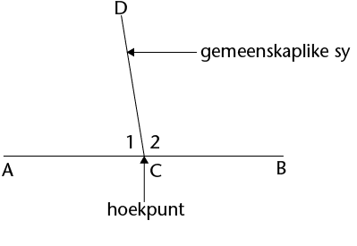
|
|
Wanneer twee lyne loodreg op mekaar is, is die supplementêre aangrensende hoeke 90° elk.
In die skets langsaan is DA en DB aangrensend supplementêre hoeke, want hulle is langs
mekaar (aangrensend), en hulle tel op na 180° (supplementêr).
|
BEREKEN ONBEKENDE HOEKE OP REGUIT LYNE
Bereken die grootte van die onbekende hoeke hier onder. Stel in elke geval ’n gepaste vergelyking op om die meetkundeprobleme op te los. Onthou om altyd ’n rede te gee vir elke stelling wat jy maak.
|
1. Bereken die waarde van a.
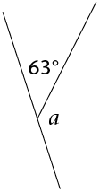
|
a + 63° =
[∠e op reguit lyn]
a =
− 63°
=
|
|
2. Bereken die waarde van x.

|
x + 29° + 90° = 180° [∠s on a straight line]
x = 180° − 29° − 90°
x = 61°
|
|
3. Bereken die waarde van y.
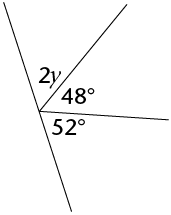
|
2y + 48° + 52° = 180° [∠s on a straight line]
2y = 180° − 52° − 48°
2y = 80°
y = 40°
|
BEREKEN NOG ONBEKENDE HOEKE OP REGUIT LYNE
|
1. Bereken:
(a) x
(b) EB

|
(a) x + 3x + 2x = 180° [∠s on a
straight line]
6x = 180°
x = 30°
(b) EB = 2x
= 2(30°)
= 60°
|
|
2. Bereken:
(a) m
(b) SR

|
(a) m + 10° + 80° + 70° = 180°
[∠s on a straight line]
m = 180° − 160°
m = 20°
(b) SR = m + 10°
= 20° + 10°
= 30°
|
|
3. Bereken:
(a) x
(b) HF

|
(a) (x + 30°) + (x + 40°) + (2x + 10°)
= 180° [∠s on a straight line]
4x = 180° − 30° − 40° − 10°
4x = 100°
x = 25°
(b) HF = 2x + 10°
= 2(25°) + 10°
= 60°
|
|
4. Bereken:
(a) k
(b) T P P

|
(a) 2k + (k + 65°) + 2k = 180°
[∠s on a straight line]
5k = 180°− 65°
5k = 115°
k = 23°
(b) TP = k + 65°
= 23° + 65°
= 88°
|
|
5. Bereken:
(a) p
(b) J R R

|
(a) 3p + 70° + (2p − 55°)
= 180° [∠s on a straight line]
5p = 180° − 70° + 55°
5p = 165°
p = 33°
(b) JR = 2p − 55°
= 2(33°) − 55°
= 11°
|

12.2 Regoorstaande hoeke
WAT IS REGOORSTAANDE HOEKE?
1. Gebruik ’n gradeboog om al die
hoeke in die figuur te meet.
Dui jou antwoorde op die figuur aan.
2. Let op watter hoeke ewe groot is, en hoe daardie gelyke hoeke gevorm is.
|
|
Regoorstaande hoeke (regoorst. ∠e) is die hoeke wat regoor mekaar is wanneer twee lyne sny.
Regoorstaande hoeke is altyd gelyk.
|

BEREKEN ONBEKENDE HOEKE
Bereken die onbekende hoeke in die volgende figure. Gee ’n rede vir elke stelling wat jy maak.
|
1. Bereken x, y en z.

|
x =
° [regoorst. ∠e]
y + 105° =
° [∠e op reguit lyn]
y =
− 105°
=
z =
[regoorst. ∠e]
|
|
2. Bereken j, k en l.

|
64° + k = 180° [∠s on a straight line]
k = 180° − 64°
k = 116°
j = 64° [vert. opp. ∠s]
l = 116° [vert. opp. ∠s]
|
|
3. Bereken a, b, c en d.

|
62° + 88° + c = 180° [∠s on a straight line]
c = 180° − 62° − 88°
c = 30°
a = 88° [vert. opp. ∠s]
b = 62° [vert. opp. ∠s]
d = 30° [vert. opp. ∠s]
|
VERGELYKINGS MET REGOORSTAANDE HOEKE
Regoorstaande hoeke is altyd gelyk. Ons kan hierdie eienskap gebruik om vergelykings op te stel, wat dan opgelos kan word om die waarde van ’n onbekende veranderlike te bereken.
|
1. Bereken die waarde van m.

|
m + 20° = 100° [regoorst. ∠e]
m = 100° − 20°
=
|
|
2. Bereken die waarde van t.

|
3t + 12° = 66° [vert. opp. ∠s]
3t = 54°
t = 18°
|
|
3. Bereken die waarde van p.

|
108° = 2p + 30° [vert. opp. ∠s]
78° = 2p
p = 39°
|
|
4. Bereken die waarde van z.

|
58° = 2z − 10° [vert. opp. ∠s]
68° = 2z
z = 34°
|
|
5. Bereken die waarde van y.

|
102° − 2y = 78° [vert. opp. ∠s]
−2y = −24°
y = 12°
|
|
6. Bereken die waarde van r.

|
126° = 180° − 3r [vert. opp. ∠s]
3r = 54°
r = 18°
|

12.3 Lyne wat gesny word deur ’n snylyn
PARE HOEKE WAT DEUR ‘N SNYLYN GEVORM WORD
’n Snylyn is ’n lyn wat minstens twee ander lyne sny.

Wanneer ’n snylyn twee lyne sny, kan ’n mens die stelle hoeke wat op die twee lyne gevorm word vergelyk deur na hulle posisies te kyk.
Die hoeke wat aan dieselfde kant van die snylyn in ooreenstemmende posisies is,
word ooreenkomstige hoeke (ooreenk. ∠e) genoem. In die figuur
is die pare ooreenkomstige hoeke:
- • a en e
- • b en f
- • d en h
- • c en g.
1. In die figuur is a en e albei links van die
snylyn en bokant ’n lyn. Beskryf ook so
die ligging van die orige pare ooreenkomstige hoeke. Die eerste een is vir jou gedoen.
b en f:
Regs van die snylyn en bokant ’n lyn.
d en h:
c en g:
Verwisselende hoeke (verw. ∠e) lê aan weerskante van die snylyn, maar is nie aangrensend of regoorstaande nie. Wanneer die verwisselende hoeke tussen die twee lyne lê, word hulle verwisselende binnehoeke genoem. In die figuur is die pare verwisselende binnehoeke:
Wanneer die verwisselende hoeke buite die
twee lyne lê, word hulle verwisselende
buitehoeke genoem. In die figuur is die pare
verwisselende buitehoeke:
2. Beskryf die ligging van die volgende pare verwisselende hoeke:
d en f:
Respectively left of the transversal and below a line, and right of the
c en e:
a en g:
b en h:
Ko-binnehoeke (ko-binne∠e) lê aan dieselfde
kant van die snylyn en tussen die twee lyne. In
die figuur is die pare ko-binnehoeke:
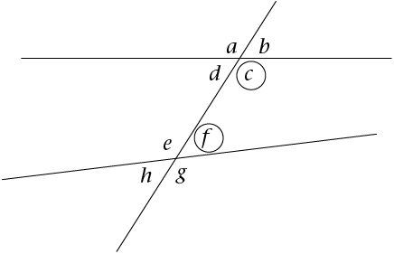
3. Beskryf die ligging van die volgende pare
ko-binnehoeke:
d en e:
Respectively left of the transversal below the top line, and left of the
transversal and above the bottom line.
c en f:
Respectively right of the transversal below the top line, and right of the
transversal and above the bottom line.
IDENTIFISEER SOORTE HOEKE
In die diagram hier onder word twee lyne deur ’n snylyn gesny.
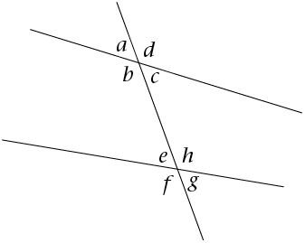
Skryf die volgende pare hoeke neer:
1. twee pare ooreenkomstige hoeke:
a en e; c en g; b en f; d en h
2. twee pare verwisselende binnehoeke:
3. twee pare verwisselende buitehoeke:
4. twee pare ko-binnehoeke:
5. twee pare regoorstaande hoeke:
a en c; h en f; d en b; e en g
12.4 Ewewydige lyne wat gesny word deur ’n snylyn
ONDERSOEK HOEKGROOTTES
In die figuur links onder is EF ’n snylyn deur AB en CD. In die figuur regs is PQ ’n snylyn deur die ewewydige lyne JK en LM.

1. Gebruik ’n gradeboog om die groottes van al die hoeke in albei figure te meet. Dui jou antwoorde aan op die figure.
2. Gebruik jou metings om die volgende tabel te voltooi.
|
|
|
|
|
Ooreenk. ∠e
|
 = =
;  = =
 = =
;  = =
 = =
;  = =
 = =
;  = =
|
 = =
;  = =
=
; =
 = =
;  = =
 = =
; =
|
|
Verw. binne∠e
|
 = =
;  = =
 = =
;  = =
|
 = =
;  = =
=
;  = =
|
|
Verw. buite∠e
|
 = =
;  = =
 = =
;  = =
|
 = =
;  = =
=
;  = =
|
|
Ko-binne∠e
|
 + +  = =
 + +  = =
|
 + 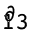 = + 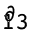 =
 + +  = =
|
3. Kyk na jou voltooide tabel in vraag 2. Wat kom jy agter van die verskillende hoekpare wanneer ’n snylyn ewewydige lyne sny?

|
|
Wanneer lyne ewewydig is, is:
- • ooreenkomstige hoeke gelyk
- • verwisselende binnehoeke gelyk
- • verwisselende buitehoeke gelyk
- • die som van ko-binnehoeke 180°.
|
BEPAAL ONBEKENDE HOEKE BY EWEWYDIGE LYNE
1. Vul die waardes van die gegewe hoeke se ooreenkomstige hoeke in.
2. Vul die waardes van die gegewe hoeke se verwisselende buitehoeke in.

3. (a) Vul die waardes van die gegewe hoeke se verwisselende binnehoeke in.
(b) Omkring die twee pare ko-binnehoeke in elk van die figure.

4. (a) Sonder om te meet, vul al die hoeke hier onder in wat gelyk is aan x of y.
(b) Verduidelik jou redes vir elke x en y wat jy ingevul het aan ’n klasmaat.
A B
5. Gee die waardes van x en y hier onder.

12.5 Bepaal onbekende hoeke op ewewydige lyne
BEPAAL ONBEKENDE HOEKE
Bepaal die groottes van die onbekende hoeke. Gee redes vir jou antwoorde. (Die eerste vraag is as voorbeeld gedoen.)
|
1. Vind die groottes van x, y en z.

|
x = 74° [verw. ∠ met gegewe 74°; AB // CD]
y = 74° [ooreenk. ∠ met x; AB // CD]
of y = 74° [regoorst. ∠ met gegewe 74°]
z = 106° [ko-binne∠ met x; AB // CD]
of z = 106° [∠e op reguit lyn]
|
|
2. Bereken die groottes van p, q en r.

|
|
|
3. Bereken die groottes van a, b, c en d.

|
|
|
4. Bereken die groottes van al die hoeke.
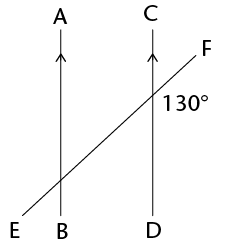
|
|
|
5. Bereken die groottes van al die
hoeke. (Kan jy twee snylyne en
twee stelle ewewydige lyne sien?)

|
|
|
UITBREIDING
|
|
|
|
Twee hoeke in die diagram word gegee as x en y. Vul al die hoeke in wat gelyk is aan x of y.
|
som van die hoeke in ’n vierhoek
Hierdie diagram is ’n deel uit die diagram hier bo.

1. Watter tipe vierhoek word hier gewys? Gee ’n rede vir jou antwoord.
2. Kyk na die snypunt links bo. Voltooi die volgende vergelyking:
Hoeke om ’n punt = 360°
∴ x + y +
+
= 360°
3. Kyk na die binnehoeke van die vierhoek. Voltooi die volgende
vergelykings:
Kan jy aan nog ’n manier dink waarop die diagram gebruik kan word om die som van die hoeke van ’n vierhoek uit te werk?
Som van die hoeke in die vierhoek = x + y +
+
Van vraag 2: x + y +
+
= 360°
∴ Som van die hoeke in die vierhoek =
°
12.6 Los meer meetkundige probleme op
HOEKVERwantskappe OP EWEWYDIGE LYNE
|
1. Bepaal die groottes van  tot tot  . .
|
|
|
2. Bepaal die groottes van x, y en z.

|
|
|
3. Bepaal die groottes van a, b, c en d.
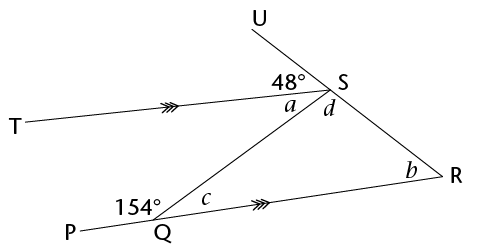
|
|
|
4. Bereken die grootte van x.

|
|
|
5. Bereken die grootte van x.

|
|
|
6. Bereken die grootte van x.

|
|
|
7. Bereken die groottes van a en CP.

|
|
HOEKVERwantskappe EN DIE EIENSKAPPE VAN DRIE- EN VIERHOEKE
|
1. Bereken die groottes van tot  . .

|
|
|
2. RSTU is ’n trapesium. Bereken die groottes van  en en  . .
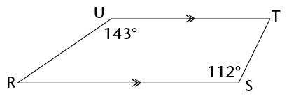
|
|
3. JKLM is ’n ruit. Bereken die groottes van J L, L,  2 en 1. 2 en 1.

|
|
4. ABCD is ’n parallelogram. Bereken die groottes van A B, A B, A D, en D D, en D C. C.

|
1. Kyk na die figuur hier onder. Identifiseer die hoeke wat langsaan beskryf word.
|

|
(a) ’n paar regoorstaande hoeke
(b) ’n paar ooreenkomstige hoeke
(c) ’n paar verwisselende binnehoeke
(d) ’n paar ko-binnehoeke
|
2. In die diagram is AB // CD. Bereken die groottes van F G, ,
G, ,  en . Gee redes vir
en . Gee redes vir
jou antwoorde.

3. In die diagram is OK = ON, KN // LM, KL // MN en L O = 160°. Bereken die waarde
O = 160°. Bereken die waarde
van x. Gee redes vir jou antwoorde.


Hersiening 232
- • Algebraïese uitdrukkings 2 232
- • Algebraïese vergelykings 2 235
- • Konstruksie van meetkundige figure 236
- • Meetkunde van 2D-figure 240
- • Meetkunde van reguit lyne 242
Assessering 244
Hersiening
Wys al die stappe in jou werk.

ALGEBRAÏESE UITDRUKKINGS 2
1. Vereenvoudig:
(a) x2 + x2
= 2x2
(b) m + m × m + m
= m + m2 + m
= m2 + 2m
(c) 5ab – 7a2 – 2a2 + 11ba
= 5ab − 9a2 + 11ab
= 16ab − 9a2
(d) (3ac2)(−4a2b)
= −12a3bc2
(e) (–4a2b3)3
= −64a6b9
(f) 
=
= 4x2z6
(g) 
=
(h)
=
=
= 5c
(i) (2x + 3x)3
= (5x)3
= 125x3
(j) 3x2(4x3 − 5)
= 12x5 + (−15x2)
= 12x5 − 15x2
(k) (4a − 7a)(a2 − 2a − 5)
= −3a(a2 − 2a − 5)
= −3a3 + 6a2 + 15a
(l) 
=
(m) 
=
=
(n) 
= 2x2 − 1 +
(o)
=
=
= − 3
2. Vereenvoudig die volgende uitdrukkings:
(a) 3(a + 2b) − 4(b − 2a)
= 3a + 6b − 4b + 8a
= 11a + 2b
(b) 3 − 2(5x2 + 6x − 2)
= 3 − 10x2 − 12x + 4
= −10x2 − 12x + 7
(c) 2x(x2 − x + 1) − 3(4 − x)
= 2x3 − 2x2 + 2x − 12 + 3x
= 2x3 − 2x2 + 5x − 12
(d) (2a + b − 4c) − (5a + b − c)
= 2a + b − 4c − 5a − b + c
= −3a − 3c
(e) a{2a2[4 + 2(3a + 1)] − a}
= a[2a2(4 + 6a + 2) − a]
= a[12a2 + 12a3 − a]
= 12a3 + 12a4 − a2
3. As a = 0, b = –2, en c = 3, bepaal die waarde van die volgende sonder om ’n sakrekenaar te gebruik. Wys al jou berekeninge:
(a) b2c
(−2)2(3) = 12
(b) 2b – b(ab – 5bc)
−4 + 2(30) = 56
(c) 
=
4. As y = –2, bepaal die waarde van 2y3 – 4y + 3.
2(−2)3 − 4(−2) + 3 = 2(−8) + 8 + 3 = −5
ALGEBRAÏESE VERGELYKINGS 2
1. Los die volgende vergelykings op:
(a) −x = −7
x = 7
(b) 2x = 24
x = 24 ÷ 2 = 12
(c) 3x − 6 = 0
3x = 6
x = 6 ÷ 3 = 2
(d) 2x + 5 = 3
2x = −2
x = −1
(e) 3(x − 4) = −3
3x − 12 = −3
3x = 9
x = 3
(f) 4(2x − 1) = 5(x − 2)
8x − 4 = 5x − 10
3x = −6
x = −2
2. Sello is x jaar oud. Thlapo is 4 jaar ouer as Sello. Die som van hulle ouderdomme is 32.
(a) Skryf hierdie inligting in ’n vergelyking deur x as die veranderlike te gebruik.
x + x + 4 = 32
2x = 28
(b) Los die vergelyking op om Thlapo se ouderdom te bepaal.
2x = 28
x = 14
So Thlapo is 14 + 4 = 18 years old
3. Die lengte van ’n reghoek is (2x + 8) en die breedte is 2 cm. Die oppervlakte van die reghoek is 12 cm2.
(a) Skryf hierdie inligting in ’n vergelyking deur x as die veranderlike te gebruik.
Area = length × breadth
12 = 2(2x + 8)
12 = 4x + 16
(b) Los die vergelyking op om die waarde van x te bepaal.
12 = 4x + 16
−4 = 4x
x = −1
(c) Wat is die lengte van die reghoek?
(2x + 8) cm = 2(−1) + 8 = 6 cm
4. Die oppervlakte van ’n reghoek is (8x2 + 2x) cm2, en die lengte is 2x cm. Bepaal die breedte van die reghoek in terme van x, in sy eenvoudigste vorm.
width = area ÷ length = = (4x + 1) cm
KONSTRUKSIE VAN MEETKUNDIGE FIGURE
Moenie enige konstruksieboë in hierdie vrae uitvee nie.
1. (a) Konstrueer DF = 56° met jou liniaal, potlood en ’n gradeboog. Benoem die hoek
korrek.

(b) Halveer D F deur net ’n passer, liniaal en potlood (nie ’n gradeboog nie)
F deur net ’n passer, liniaal en potlood (nie ’n gradeboog nie)
te gebruik.
2. Hier is ’n ruwe skets van ’n vierhoek (NIE volgens skaal geteken nie):

Konstrueer die vierhoek akkuraat en in volle grootte hier onder.

3. Gebruik net ’n passer, liniaal en potlood en konstrueer:
(a) ’n lyn deur C wat loodreg op AB is
(b) ’n lyn deur D wat loodreg op AB is.

4. Konstrueer en benoem die volgende driehoeke en vierhoeke:
(a) Driehoek ABC, waar AB = 8 cm, BC = 5,5 cm en AC = 4,9 cm

(b) Ruit GHJK, waar GH = 6 cm en = 50°
5. Hier is ’n ruwe skets van driehoek FGH (NIE volgens skaal geteken nie):

Gebruik ’n liniaal, potlood en gradeboog, en konstrueer en benoem die driehoek
akkuraat en in volle grootte.

6. Konstrueer ’n hoek van 120° sonder om ’n gradeboog te gebruik.

MEETKUNDE VAN 2D-FIGURE
1. Waar of onwaar? Alle gelyksydige driehoeke – dit maak nie saak hoe groot hulle is
nie – het hoeke wat gelyk is aan 60°.
True
2. (a) Twee van die hoeke in ’n driehoek is 35° en 63°. Bereken die grootte van die derde
hoek.
180° − (35° + 63°) = 180° − 98° = 82°
(b) Een van die hoeke in ’n vierhoek is ’n regte hoek en ’n ander een is 80°. As die
oorblywende twee hoeke ewe groot is, wat is die grootte van elkeen?
[360° − (80° + 90°)] ÷ 2
= (360° − 170°) ÷ 2
= 95°
3. As  = 40° en
= 40° en  = 90° in driehoek MNP, wat is die grootte van
= 90° in driehoek MNP, wat is die grootte van  ?
?
= 180° − (40° + 90°)
= 180° − 130°
= 50°
4. Skryf definisies van die driehoeke in die tabel hier onder neer.
|
|
|
|
|
A triangle which has all sides equal and so each angle is equal to 60°.
|
A triangle in which two of the sides are equal. The angles opposite the equal sides are also equal.
|
A triangle in which one angle is equal to 90°.
|
5. Die volgende lys gee die eienskappe van drie vierhoeke: A, B en C.
(a) Gee die spesiale name van elk van figure A, B en C.
Vierhoek A: Die teenoorstaande sye is gelyk en ewewydig.
Parallelogram
Vierhoek B: Die aangrensende sye is gelyk, terwyl die teenoorstaande sye nie
gelyk is nie.
Kite
Vierhoek C: Al die hoeke is regte hoeke.
Rectangle
(b) Watter eienskap moet vierhoek A ook hê om dit ’n ruit te maak?
All of the sides would have to be equal.
(c) Watter eienskap moet vierhoek A ook hê om dit ’n reghoek te maak?
The angles would all have to be right angles.
6. Bepaal die grootte van  . Wys al die stappe van jou berekening en gee redes.
. Wys al die stappe van jou berekening en gee redes.
5x + 30° = 180°
5x = 180° − 30°
5x = 150°
x = 30°
= 3x + 5°
= 95°
7. Bepaal die grootte van x. Gee redes.
This figure is a parallelogram because
opposite sides are parallel.
The opposite angles of a parallelogram
are equal.
x = 45°
MEETKUNDE VAN REGUIT LYNE
1. Bestudeer die diagram langsaan:
(a) Noem ’n hoek wat regoorstaande
aan E G is.
G is.
JL
(b) Noem ’n hoek wat ooreenkomstig
aan EG is.
KD
(c) Noem ’n hoek wat ’n ko-binnehoek
met E G is.
G is.
DH
(d) Noem ’n hoek wat verwisselend met
E G is.
G is.
FH
2. Bepaal die grootte van x in elk van die volgende diagramme. Wys alle stappe van jou werk en gee redes.
(a)
4x + x = 90° [∠s on a str. line = 180°,
PL = 90°]
5x = 90° x = 18°
(b)
x + 90° = 110° [corr. ∠s; DF // GJ]
x = 110° − 90°
x = 20°
(c)
2x + 60° = 180° [sum of co-int. ∠s = 180°]
180° − 60° = 2x
2x = 120°
x = 60°
(d)
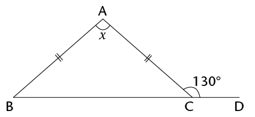
AB = 50° [sum of ∠s on str. line = 180°]
ΔABC is an isosceles triangle.
So = AB = 50° [isos. Δ]
x = 180° − 2(50°) [sum of ∠s of Δ = 180°]
x = 80°
(e) Is lynstukke AB en DE ewewydig?
Bewys jou antwoord.
Yes.
DC = 105° [sum of ∠s on str. line = 180°]
AG = DC = 105° and they are
corresponding angles
Therefore AB // DE
Assessering
In hierdie afdeling dui die getalle tussen hakies aan die einde van ’n vraag die getal punte aan wat die vraag werd is. Gebruik hierdie inligting om jou te help bepaal hoeveel werk nodig is. Die totale getal punte wat aan die assessering toegeken word, is 75.

1. Vereenvoudig die volgende uitdrukkings:
(a) 5x2 – 6x2 + 10x2 (1)
= x2(5 − 6 + 10)
= 9x2
(b) 4(3x – 7) – 3(2 + x) (2)
= 12x − 28 − 6 − 3x
= 9x − 34
(c) (–2a2bc3)2 ÷ 4abcd (3)
=
=
(d)  (3)
(3)
=
=
= 2x − 10
(e) 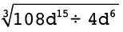 (3)
=
=
= 3d3
(f) 2[3x2 – (4 – x2)] – [9 + (4x)2] (3)
= 6x2 − 8 + 2x2 − 9 − 16x2
= −8x2 − 17
2. Bepaal die waarde van a as b = 3, c = –4 en d = 2:
(a) a = b + c × d (2)
a = 3 − 4 × 2
a = 3 − 8
a = −5
(b) ab2 = 2c – d ÷ 2 (3)
a(3)2 = 2(−4) − 2 ÷ 2
9a = −8 − 1
9a = −9
a = −1
3. Los die volgende vergelykings op:
(a) –7x = 56 (2)
−7x ÷ −7 = 56 ÷ (−7)
x = −8
(b) 4(x + 3) = 16 (2)
4x + 12 = 16
4x + 12 − 12 = 16 − 12
4x = 4
x = 1
4. Sipho, Fundiswa en Ntosh is broers. Sipho verdien Rx per maand; Fundiswa verdien R1 000 meer as Sipho per maand, en Ntosh verdien dubbel wat Sipho verdien. As jy hulle salarisse bymekaartel, kry jy ’n totaal van R27 000.
(a) Skryf hierdie inligting in ’n vergelyking deur x te gebruik. (2)
27 000 = x + x + 1 000 + 2x
so 27 000 = 4x + 1 000
(b) Los die vergelyking op om uit te vind hoeveel Fundiswa per maand verdien. (2)
x = 26 000 ÷ 4 = 6 500
Fundiswa earns x + R1 000 = R7 500.
5. Konstrueer die volgende deur net ’n potlood, liniaal en passer te gebruik. Moenie enige konstruksieboë uitvee nie.
(a) ’n Hoek van 60° (2)
(b) Die loodregte halveerlyn van lyn VW, waar VW = 10 cm (3)

(c) Driehoek KLM, waar KL = 8,3 cm, LM = 5,9 cm en KM = 7 cm (4)

(d) Parallelogram EFGH, waar E = 60°, EF = 4,2 cm en EH = 8 cm (4)
6. (a) Wat is die kenmerk(e) wat ’n ruit anders as ’n parallelogram maak? (1)
The sides are equal.
(b) Waar of onwaar? ’n Reghoek is ’n spesiale soort parallelogram. (1)
True: it has all the properties of a parallelogram and some other ones.
7. Bepaal die grootte van x in elke figuur. Wys al die nodige stappe en gee redes vir alle bewerings:.
(a)
(3)
2x = 54° [opp. ∠s of parallelogram
are equal]
x = 27°
(b)
(4)
2x − 20° + 75° + 80° + x = 360°
3x + 135° = 360°
3x = 360° − 135°
x = 225° ÷ 3 = 75°
(c)
(3)
x = 180° − 2(38°) [isos. Δ and sum of ∠s in Δ]
= 180° − 76°
= 104°
8. Bestudeer die diagram. Beantwoord dan die vrae wat volg:

(a) Wat word hoeke soos x en y genoem? Voltooi:
x en y vorm ’n paar
. (1)
(b) Skryf ’n vergelyking neer wat die verwantskap tussen hoeke x en y wys. (1)
x + y = 180°
9. Bepaal die grootte van x. Wys al die nodige stappe en gee redes vir alle bewerings wat jy maak.
(a)
(4)
The angle vertically opposite the given
angle = 115°.
x is co-interior with this angle,
so x = 180° − 115° = 65°.
(b)
(5)
125° = 2x + x + 20° ext. ∠s triangle
125° = 3x + 20°
125° − 20° = 3x
3x = 105°
x = 105° ÷ 3 = 35°
(c)
(3)
ED = 72° [corr. ∠s, BD // FG]
x = ED = 72° [corr. ∠s AB // EC]
10. Kyk na die volgende diagram, waarin gegee word dat D I = 30°, DE = EI, DF // IG,
I = 30°, DE = EI, DF // IG,
en GH = IH.

(a) Bepaal, met redes, die grootte van  . (6)
. (6)
EI = ED = 75° [ΔEDI is isosceles]
EH = 75° + 30° = 105° [ext. ∠ of triangle = sum opp. int. ∠s]
EG = 30° [alt. ∠ to DI, ED // GI]
GH = 180° − (75° + 30°) = 75° [∠s on a straight line]
= 180° − 150° = 30° [ΔHGI is isos. and sum of ∠s of Δ = 180°]
(b) Watter van die volgende stellings is korrek? Verduidelik jou antwoord. (2)
(i) ∆DEI is gelykvormig aan ∆GHI
(ii) ∆DEI is kongruent aan ∆GHI
(iii) Ons kan nie ’n verwantskap tussen ∆DEI en ∆GHI bepaal nie omdat
daar nie genoeg inligting gegee word nie.
Stelling
is korrek want
al die ooreenstemmende hoeke in ∆DEI en ∆GHI is ewe
groot, maar ons weet nie of al die sye ewe lank is nie.